<title>Bambang Ferdiansyah Portfolio</title>
<meta name="claude:viewport-fit-sides" content="cover">
<link rel="preconnect" href="https://fonts.googleapis.com">
<link rel="preconnect" href="https://fonts.gstatic.com" crossorigin>
<link rel="stylesheet" href="https://fonts.googleapis.com/css2?family=Archivo:wdth,wght@75..100,500..800&family=Instrument+Sans:wght@400;500;600;700&family=JetBrains+Mono:wght@400;500&display=swap">
<style>
/* Layout: an engineering project file. Light sheets, one quiet green accent, photos and real numbers do the talking. */
:root{
  --bg:#EEF1EF; --sheet:#FAFBFA; --sheet-2:#E2E8E4; --ink:#13201B; --ink-2:#4D5B55; --rule:#D0D9D4;
  --green:#0B7A55; --green-2:#DCEEE5; --amber:#A86C08; --amber-2:#F8EDD5; --img:#F3F5F4; --blue:#2D6A9F; --blue-2:#DDE9F3; --chip:#F7F9F8;
  --display:"Archivo","Arial Narrow",Arial,sans-serif;
  --body:"Instrument Sans","Segoe UI",Roboto,Helvetica,Arial,sans-serif;
  --mono:"JetBrains Mono",ui-monospace,SFMono-Regular,Menlo,Consolas,monospace;
}
@media (prefers-color-scheme: dark){:root:not([data-theme="light"]){
  --bg:#0F1714; --sheet:#16201C; --sheet-2:#1D2A25; --ink:#E5EDE9; --ink-2:#9EAFA8; --rule:#2B3B35;
  --green:#4BC996; --green-2:#17322A; --amber:#EDB24A; --amber-2:#342912; --img:#E9EEEB; --blue:#79B3E3; --blue-2:#1A2C3B; --chip:#EEF2F0; color-scheme:dark}}
:root[data-theme="dark"]{
  --bg:#0F1714; --sheet:#16201C; --sheet-2:#1D2A25; --ink:#E5EDE9; --ink-2:#9EAFA8; --rule:#2B3B35;
  --green:#4BC996; --green-2:#17322A; --amber:#EDB24A; --amber-2:#342912; --img:#E9EEEB; --blue:#79B3E3; --blue-2:#1A2C3B; --chip:#EEF2F0; color-scheme:dark}

*{box-sizing:border-box}
html{scroll-behavior:smooth}
@media (prefers-reduced-motion:reduce){html{scroll-behavior:auto}*{transition:none!important}}
body{background:var(--bg);color:var(--ink);font-family:var(--body);font-size:16px;line-height:1.6;
  padding-left:max(16px,env(safe-area-inset-left,0px));padding-right:max(16px,env(safe-area-inset-right,0px))}
body::before{content:"";position:fixed;inset:0 0 auto;height:env(safe-area-inset-top,0px);z-index:30;background:var(--bg)}
.wrap{max-width:1180px;margin:0 auto}
h1,h2,h3,h4{margin:0;text-wrap:balance;font-family:var(--display);font-stretch:85%;letter-spacing:-.005em}
p{margin:0}
img{max-width:100%;display:block}
a{color:var(--green)}
:focus-visible{outline:2px solid var(--green);outline-offset:3px}
.mono{font-family:var(--mono);font-size:12px;letter-spacing:.07em;text-transform:uppercase;color:var(--ink-2)}
.tnum{font-variant-numeric:tabular-nums}

.nav{position:sticky;top:env(safe-area-inset-top,0px);z-index:20;background:color-mix(in srgb,var(--bg) 92%,transparent);backdrop-filter:blur(8px);border-bottom:1px solid var(--rule);
  margin-left:calc(-1*max(16px,env(safe-area-inset-left,0px)));margin-right:calc(-1*max(16px,env(safe-area-inset-right,0px)));
  padding:12px max(16px,env(safe-area-inset-right,0px)) 12px max(16px,env(safe-area-inset-left,0px))}
.nav .wrap{display:flex;align-items:center;justify-content:space-between;gap:16px}
.nav b{font-family:var(--display);font-stretch:85%;font-size:18px;font-weight:700}
.nav nav{display:flex;gap:20px;flex-wrap:wrap}
.nav nav a{color:var(--ink-2);text-decoration:none;font-size:14px}
.nav nav a:hover{color:var(--green)}
@media (max-width:860px){.nav nav{display:none}}

.hero{display:grid;grid-template-columns:minmax(0,1fr) 260px;gap:48px;align-items:end;padding-block:56px 28px}
.hero h1{font-size:clamp(44px,6.4vw,80px);font-weight:750;line-height:1;font-stretch:80%}
.hero .role{font-size:clamp(19px,2vw,24px);margin-top:14px;line-height:1.35}
.hero .role span{color:var(--ink-2)}
.facts{display:flex;flex-wrap:wrap;gap:8px;margin-top:22px}
.facts span{font-size:13px;padding:5px 11px;border:1px solid var(--rule);border-radius:999px;background:var(--sheet);color:var(--ink-2)}
.hero img{width:100%;aspect-ratio:4/5;object-fit:cover;object-position:top;border-radius:6px;background:var(--sheet-2)}
@media (max-width:760px){.hero{grid-template-columns:1fr;gap:24px;padding-block:32px 20px}.hero img{max-width:220px}}
.heroimgs{display:grid;grid-template-columns:2fr 1fr 1fr;gap:10px}
.heroimgs .fig img{aspect-ratio:auto;height:clamp(140px,22vw,260px)}
@media (max-width:760px){.heroimgs{grid-template-columns:1fr 1fr}.heroimgs .fig:first-child{grid-column:span 2}}

.numbers{display:grid;grid-template-columns:repeat(6,1fr);margin-top:28px;border:1px solid var(--rule);border-radius:6px;background:var(--sheet)}
.num{padding:18px 16px;border-left:1px solid var(--rule);min-width:0}
.num:first-child{border-left:0}
.num .v{font-family:var(--display);font-stretch:75%;font-weight:750;font-size:clamp(26px,2.6vw,36px);line-height:1;white-space:nowrap}
.num .l{font-size:12.5px;line-height:1.4;color:var(--ink-2);margin-top:8px}
@media (max-width:980px){.numbers{grid-template-columns:repeat(3,1fr)}.num:nth-child(4){border-left:0}.num:nth-child(n+4){border-top:1px solid var(--rule)}}
@media (max-width:520px){.numbers{grid-template-columns:1fr 1fr}.num{border-left:0;border-top:1px solid var(--rule)}.num:nth-child(-n+2){border-top:0}.num:nth-child(even){border-left:1px solid var(--rule)}}

section.s{padding-block:80px 8px}
.head{display:grid;grid-template-columns:180px 1fr;gap:28px;margin-bottom:32px}
.head .idx{font-family:var(--mono);font-size:12px;letter-spacing:.07em;text-transform:uppercase;color:var(--green);padding-top:10px}
.head h2{font-size:clamp(30px,3.8vw,44px);font-weight:700;line-height:1.05}
.head p{color:var(--ink-2);margin-top:12px;max-width:64ch}
@media (max-width:760px){.head{grid-template-columns:1fr;gap:4px}}

.year{overflow-x:auto;padding-bottom:8px}
.year-in{min-width:960px}
.ytrack{display:grid;grid-template-columns:repeat(14,1fr);border-top:2px solid var(--ink)}
.ytrack span{font-family:var(--mono);font-size:11px;color:var(--ink-2);padding:6px 0 0 6px;border-left:1px solid var(--rule)}
.ytrack span:first-child{border-left:0;padding-left:0}
.yroles{display:grid;grid-template-columns:repeat(14,1fr);margin-top:12px}
.yrole{padding:10px 12px;font-size:13px;font-weight:600;border-radius:3px}
.yrole small{display:block;font-weight:400;color:var(--ink-2);font-size:12px}
.yev{display:grid;grid-template-columns:repeat(14,1fr);margin-top:12px;row-gap:8px}
.yev div{font-size:12.5px;line-height:1.35;border-left:2px solid var(--green);padding:2px 0 2px 8px}
.yev b{display:block;font-family:var(--mono);font-size:10.5px;font-weight:500;color:var(--ink-2)}

.gt{overflow-x:auto;padding-bottom:6px}
.gtin{min-width:980px}
.gr{display:grid;grid-template-columns:210px 1fr;align-items:center;border-top:1px solid var(--rule)}
.gr.ghd{border-top:0}
.gtrack{display:grid;grid-template-columns:repeat(14,1fr);align-items:center;height:30px;background:repeating-linear-gradient(90deg,transparent 0 calc(100%/14 - 1px),var(--rule) calc(100%/14 - 1px) calc(100%/14))}
.ghd .gtrack{background:none;height:auto}
.ghd .gtrack span{font-family:var(--mono);font-size:10.5px;color:var(--ink-2);padding:0 0 6px 4px}
.gl{font-size:13.5px;padding-right:10px;text-align:left;white-space:nowrap;overflow:hidden;text-overflow:ellipsis}
button.gl{all:unset;cursor:pointer;font-size:13.5px;padding-right:10px;white-space:nowrap;overflow:hidden;text-overflow:ellipsis}
button.gl:hover{color:var(--green);text-decoration:underline}
button.gl:focus-visible{outline:2px solid var(--green)}
.gtrack i{height:14px;border-radius:7px;margin:0 2px;grid-row:1}
.gtrack i.v,.glegend i.v{background:var(--green)}
.gtrack i.m,.glegend i.m{background:var(--amber)}
.gtrack i.s,.glegend i.s{background:var(--blue)}
.ggrp .gl{font-weight:700;font-family:var(--display);font-size:16px;padding-top:12px}
.ggrp .gtrack{background:none}
.groles .gtrack{height:auto;padding:6px 0;background:none}
.groles b{font-size:12px;font-weight:600;padding:6px 8px;border-radius:3px;margin:0 1px;grid-row:1;white-space:nowrap;overflow:hidden;text-overflow:ellipsis}
.gms em{font-style:normal;font-size:12px;font-weight:600;color:var(--amber);white-space:nowrap;grid-row:1}
.glegend{display:flex;gap:18px;margin-top:12px;font-size:13px;color:var(--ink-2);flex-wrap:wrap}
.glegend i{display:inline-block;width:18px;height:8px;border-radius:4px;margin-right:6px;vertical-align:middle}

.case{margin-bottom:64px;background:var(--sheet);border:1px solid var(--rule);border-radius:8px;overflow:hidden}
.chead{display:grid;grid-template-columns:auto 1fr auto;gap:18px;align-items:center;padding:20px 22px;border-bottom:1px solid var(--rule)}
.chead .no{font-family:var(--mono);font-size:12px;color:var(--green);border:1px solid var(--green);border-radius:3px;padding:4px 8px}
.chead h3{font-size:clamp(24px,2.8vw,32px);font-weight:700;line-height:1.05}
.chead .sub{color:var(--ink-2);margin-top:4px;font-size:15px}
.chead .when{font-family:var(--mono);font-size:11.5px;color:var(--ink-2);text-align:right;white-space:nowrap}
@media (max-width:640px){.chead{grid-template-columns:auto 1fr}.chead .when{grid-column:1/-1;text-align:left}}
.cin{padding:22px}
.story{display:grid;grid-template-columns:repeat(3,1fr);gap:0}
.story>div{padding:0 20px 0 0;min-width:0}
.story>div+div{padding-left:20px;border-left:1px solid var(--rule)}
.story h4{font-family:var(--mono);font-size:11px;font-weight:500;letter-spacing:.08em;text-transform:uppercase;color:var(--ink-2);margin-bottom:8px}
.story p{font-size:15px}
.story .part h4{color:var(--green)}
@media (max-width:860px){.story{grid-template-columns:1fr;gap:16px}.story>div+div{padding-left:0;border-left:0;border-top:1px solid var(--rule);padding-top:16px}}
.kpis{display:grid;grid-template-columns:repeat(4,1fr);margin-top:22px;border-top:1px solid var(--rule);border-bottom:1px solid var(--rule)}
.kpi{padding:16px 16px 16px 0;min-width:0}
.kpi+.kpi{padding-left:16px;border-left:1px solid var(--rule)}
.kpi .v{font-family:var(--display);font-stretch:75%;font-weight:750;font-size:clamp(28px,3vw,38px);line-height:1;white-space:nowrap}
.kpi .l{font-size:12.5px;color:var(--ink-2);margin-top:6px;line-height:1.4}
.kpi.proj .v{color:var(--amber)}
.kpi.proj .l::after{content:" (projected)";color:var(--amber)}
@media (max-width:760px){.kpis{grid-template-columns:1fr 1fr}.kpi:nth-child(3){border-left:0;padding-left:0}.kpi:nth-child(n+3){border-top:1px solid var(--rule)}}
.panel{margin-top:22px;min-width:0}
.panel>h4,.ph4{font-family:var(--mono);font-size:11px;font-weight:500;letter-spacing:.08em;text-transform:uppercase;color:var(--ink-2);margin-bottom:12px;display:flex;justify-content:space-between;gap:12px;flex-wrap:wrap}
.cols{display:grid;grid-template-columns:1fr 1fr;gap:24px;margin-top:22px}
.cols>*{min-width:0}
.cols .panel{margin-top:0}
.box{border:1px solid var(--rule);border-radius:6px;padding:18px;background:var(--bg)}
@media (max-width:860px){.cols{grid-template-columns:1fr}}

.fig{margin:0;position:relative;min-width:0}
.fig button{all:unset;display:block;width:100%;cursor:zoom-in;border-radius:4px;overflow:hidden;background:var(--img);position:relative}
.fig button:focus-visible{outline:2px solid var(--green);outline-offset:2px}
.fig img{width:100%;aspect-ratio:var(--ar,4/3);object-fit:cover;transition:transform .5s ease}
.fig.contain img{object-fit:contain}
.fig button:hover img{transform:scale(1.03)}
.fig figcaption{font-size:12.5px;color:var(--ink-2);margin-top:6px;line-height:1.35}
.lbl{position:absolute;left:8px;bottom:8px;font-family:var(--mono);font-size:10.5px;letter-spacing:.05em;text-transform:uppercase;background:rgba(15,23,20,.78);color:#EEF3F0;padding:3px 7px;border-radius:2px;pointer-events:none}
.mosaic{display:grid;grid-template-columns:repeat(6,1fr);gap:10px;margin-top:22px}
.mosaic .w2{grid-column:span 2}.mosaic .w3{grid-column:span 3}.mosaic .w4{grid-column:span 4}.mosaic .h2{grid-row:span 2}
.mosaic .h2 img{height:100%;aspect-ratio:auto}
@media (max-width:760px){.mosaic{grid-template-columns:1fr 1fr}.mosaic .w2,.mosaic .w3{grid-column:span 1}.mosaic .w4{grid-column:span 2}.mosaic .h2{grid-row:span 1}.mosaic .h2 img{aspect-ratio:4/3}}

.seg{display:inline-flex;border:1px solid var(--rule);border-radius:4px;overflow:hidden;background:var(--sheet)}
.seg button{all:unset;cursor:pointer;font-family:var(--mono);font-size:11px;letter-spacing:.05em;text-transform:uppercase;padding:6px 11px;color:var(--ink-2)}
.seg button[aria-pressed="true"]{background:var(--ink);color:var(--bg)}
.seg button:focus-visible{outline:2px solid var(--green);outline-offset:-2px}
.swaphead{display:flex;justify-content:space-between;align-items:center;gap:10px;margin-bottom:10px;flex-wrap:wrap}
.swaphead b{font-size:14px}
.swap{position:relative;border-radius:4px;overflow:hidden;background:var(--img)}
.swap img{width:100%;aspect-ratio:var(--ar,1/1);object-fit:contain;transition:opacity .4s ease}
.swap img+img{position:absolute;inset:0;height:100%;object-fit:cover}
.swap[data-state="a"] img+img{opacity:0}

.gantt{overflow-x:auto}
.gin{min-width:560px}
.grow{display:grid;grid-template-columns:210px 1fr;gap:12px;align-items:center;padding:6px 0;border-top:1px solid var(--rule);font-size:13.5px}
.grow.hd{border-top:0;padding-top:0}
.grow.grp{font-weight:700}
.gbar{position:relative;height:14px;background:repeating-linear-gradient(90deg,transparent 0 calc(20% - 1px),var(--rule) calc(20% - 1px) 20%)}
.gbar i{position:absolute;top:2px;height:10px;width:10px;border-radius:50%;background:var(--green);transform:translateX(-50%)}
.gmonths{display:grid;grid-template-columns:repeat(5,1fr);font-family:var(--mono);font-size:10.5px;color:var(--ink-2)}

.bars{display:flex;flex-direction:column;gap:12px}
.bar{display:grid;grid-template-columns:110px 1fr 84px;gap:12px;align-items:center;font-size:14px}
.bar .tr{position:relative;height:26px;background:var(--sheet-2);border-radius:3px;overflow:hidden}
.bar .fl{position:absolute;inset:0 auto 0 0;background:var(--ink-2);border-radius:3px;transition:width 1s cubic-bezier(.2,.7,.2,1)}
.bar .fl.g{background:var(--green)}
.bar .fl.r{background:repeating-linear-gradient(45deg,var(--ink-2) 0 5px,transparent 5px 9px);opacity:.55}
.bar .vv{font-family:var(--display);font-stretch:75%;font-weight:750;font-size:24px;text-align:right;white-space:nowrap}
.axis{display:grid;grid-template-columns:110px 1fr 84px;gap:12px;font-family:var(--mono);font-size:10.5px;color:var(--ink-2);margin-top:6px}
.axis .ticks{display:flex;justify-content:space-between}
.pre .fl{width:0!important}
@media (max-width:520px){.bar,.axis{grid-template-columns:84px 1fr 62px}.bar .vv{font-size:19px}}

.lines{display:grid;grid-template-columns:repeat(7,1fr);gap:6px}
.ln{border:1px solid var(--rule);border-radius:4px;padding:10px 4px;text-align:center;background:var(--sheet)}
.ln .d{width:12px;height:12px;border-radius:50%;background:var(--green);margin:0 auto 8px}
.ln b{font-family:var(--display);font-stretch:75%;font-size:22px;font-weight:750;display:block;line-height:1}
@media (max-width:520px){.lines{grid-template-columns:repeat(4,1fr)}}

.how{display:grid;grid-template-columns:repeat(4,1fr);border:1px solid var(--rule);border-radius:4px;overflow:hidden}
.how>div{padding:14px;border-left:1px solid var(--rule);background:var(--bg);min-width:0}
.how>div:first-child{border-left:0}
.how b{font-family:var(--mono);font-size:11px;color:var(--green);display:block;margin-bottom:4px;font-weight:500}
.how p{font-size:14px}
@media (max-width:760px){.how{grid-template-columns:1fr 1fr}.how>div:nth-child(3){border-left:0}.how>div:nth-child(n+3){border-top:1px solid var(--rule)}}
.proc{display:grid;grid-template-columns:repeat(4,1fr);gap:10px}
.proc figcaption{font-weight:600;color:var(--ink)!important;font-size:13.5px!important}
@media (max-width:760px){.proc{grid-template-columns:1fr 1fr}}
.phases{display:grid;grid-template-columns:repeat(7,1fr);gap:3px;margin-top:10px}
.phases div{background:var(--green-2);padding:8px;font-size:12px;line-height:1.3;border-radius:2px;min-width:0}
.phases b{display:block;font-family:var(--mono);font-size:10px;font-weight:500;color:var(--green)}
@media (max-width:760px){.phases{grid-template-columns:1fr 1fr}}
.strip{display:flex;gap:10px;overflow-x:auto;scroll-snap-type:x mandatory;padding-bottom:6px}
.strip .fig{flex:0 0 160px;scroll-snap-align:start}
.spec{display:grid;grid-template-columns:repeat(4,1fr);gap:1px;background:var(--rule);border:1px solid var(--rule);border-radius:4px;overflow:hidden}
.spec>div{background:var(--bg);padding:14px;min-width:0}
.spec .v{font-family:var(--display);font-stretch:75%;font-weight:750;font-size:30px;line-height:1}
.spec .l{font-size:12.5px;color:var(--ink-2);margin-top:5px}
@media (max-width:760px){.spec{grid-template-columns:1fr 1fr}}

.filters{display:flex;gap:8px;flex-wrap:wrap;margin-bottom:20px}
.filters button{all:unset;cursor:pointer;font-size:14px;padding:7px 14px;border:1px solid var(--rule);border-radius:999px;background:var(--sheet)}
.filters button[aria-pressed="true"]{background:var(--ink);color:var(--bg);border-color:var(--ink)}
.filters button:focus-visible{outline:2px solid var(--green);outline-offset:2px}
.filters button span{font-family:var(--mono);font-size:11px;opacity:.7;margin-left:6px}
.pgrid{display:grid;grid-template-columns:repeat(4,1fr);gap:14px}
.pcard{all:unset;cursor:pointer;display:flex;flex-direction:column;background:var(--sheet);border:1px solid var(--rule);border-radius:6px;overflow:hidden;transition:border-color .2s ease,transform .2s ease;min-width:0}
.pcard:hover{border-color:var(--green);transform:translateY(-2px)}
.pcard:focus-visible{outline:2px solid var(--green);outline-offset:2px}
.pcard img{width:100%;aspect-ratio:16/10;object-fit:cover;object-position:center 35%;background:var(--img)}
.pcard .pb{padding:14px;display:flex;flex-direction:column;gap:6px;flex:1}
.pcard h4{font-size:17px;font-weight:700;line-height:1.2}
.pcard p{font-size:13px;color:var(--ink-2);line-height:1.45}
.pcard .hl{margin-top:auto;padding-top:8px;border-top:1px dashed var(--rule);font-family:var(--display);font-stretch:75%;font-weight:750;font-size:22px;line-height:1.05}
.pcard .hl small{display:block;font-family:var(--body);font-weight:400;font-size:12px;color:var(--ink-2);margin-top:3px;font-stretch:100%}
@media (max-width:1040px){.pgrid{grid-template-columns:repeat(3,1fr)}}
@media (max-width:760px){.pgrid{grid-template-columns:1fr 1fr}}
@media (max-width:460px){.pgrid{grid-template-columns:1fr}}

dialog.pm{border:0;padding:0;width:min(1000px,94vw);max-height:90vh;border-radius:8px;background:var(--bg);color:var(--ink);overflow:auto}
dialog::backdrop{background:rgba(8,14,12,.78)}
.pm .ptop{position:sticky;top:0;z-index:2;display:flex;justify-content:space-between;align-items:center;gap:12px;padding:14px 20px;background:var(--sheet);border-bottom:1px solid var(--rule)}
.pm .ptop h3{font-size:24px;font-weight:700}
.xbtn{all:unset;cursor:pointer;font-family:var(--mono);font-size:12px;padding:7px 12px;border:1px solid var(--rule);border-radius:3px;background:var(--sheet);color:var(--ink)}
.xbtn:focus-visible{outline:2px solid var(--green)}
.pm .pbody{display:grid;grid-template-columns:1.1fr 1fr;gap:22px;padding:20px}
.pm .main{width:100%;aspect-ratio:16/10;object-fit:contain;background:var(--img);border-radius:4px}
.pm .thumbs{display:flex;gap:8px;margin-top:8px;flex-wrap:wrap}
.pm .thumbs button{all:unset;cursor:pointer;width:72px;height:54px;border-radius:3px;overflow:hidden;border:2px solid transparent}
.pm .thumbs button[aria-pressed="true"]{border-color:var(--green)}
.pm .thumbs img{width:100%;height:100%;object-fit:cover}
.pm .info{display:flex;flex-direction:column;gap:14px;min-width:0}
.pm h5{margin:0 0 4px;font-family:var(--mono);font-size:11px;font-weight:500;letter-spacing:.08em;text-transform:uppercase;color:var(--ink-2)}
.pm .info p,.pm .info li{font-size:14.5px}
.pm ul{margin:0;padding-left:18px}
.pm .mk{display:grid;grid-template-columns:repeat(auto-fit,minmax(120px,1fr));gap:8px}
.pm .mk div{background:var(--sheet);border:1px solid var(--rule);border-radius:4px;padding:10px}
.pm .mk b{display:block;font-family:var(--display);font-stretch:75%;font-weight:750;font-size:26px;line-height:1}
.pm .mk span{font-size:12px;color:var(--ink-2)}
.pm .part h5{color:var(--green)}
@media (max-width:760px){.pm .pbody{grid-template-columns:1fr}}

.dgrid{display:grid;grid-template-columns:repeat(4,1fr);gap:12px;margin-top:22px}
.dgrid .w2{grid-column:span 2}
@media (max-width:760px){.dgrid{grid-template-columns:1fr 1fr}}

.bg{display:grid;grid-template-columns:1fr 320px;gap:40px}
.tl{border-left:2px solid var(--rule);margin-left:6px;display:flex;flex-direction:column;gap:20px}
.ev{position:relative;padding-left:22px;display:grid;grid-template-columns:130px 1fr;gap:14px}
.ev::before{content:"";position:absolute;left:-7px;top:6px;width:12px;height:12px;border-radius:50%;background:var(--bg);border:2px solid var(--ink-2)}
.ev.now::before{background:var(--green);border-color:var(--green)}
.ev .d{font-family:var(--mono);font-size:12px;color:var(--ink-2);padding-top:2px}
.ev h4{font-size:18px;font-weight:700}
.ev p{font-size:14.5px;color:var(--ink-2);margin-top:2px}
.found{display:grid;grid-template-columns:1fr 1fr;gap:10px;align-content:start}
.found .w2{grid-column:span 2}
@media (max-width:860px){.bg{grid-template-columns:1fr}}
@media (max-width:520px){.ev{grid-template-columns:1fr;gap:2px}}

.rec{display:grid;grid-template-columns:1fr 1fr;gap:40px}
.list{list-style:none;margin:0;padding:0;border-top:2px solid var(--ink)}
.list li{display:grid;grid-template-columns:1fr auto;gap:12px;padding:11px 0;border-bottom:1px solid var(--rule);font-size:15px}
.list li span:last-child{font-family:var(--mono);font-size:12px;color:var(--ink-2)}
.sk{display:flex;flex-direction:column;gap:16px}
.sk h4{font-family:var(--mono);font-size:11px;font-weight:500;letter-spacing:.08em;text-transform:uppercase;color:var(--ink-2);margin:0 0 8px}
.tags{display:flex;flex-wrap:wrap;gap:6px}
.tags span{font-size:13px;padding:5px 10px;border:1px solid var(--rule);border-radius:999px;background:var(--sheet)}
@media (max-width:860px){.rec{grid-template-columns:1fr}}

.contact{margin-top:80px;border-top:2px solid var(--ink);padding-block:36px 56px;display:grid;grid-template-columns:1fr 1fr;gap:40px}
.contact>div{min-width:0}
.contact h2{font-size:clamp(28px,3.4vw,40px);font-weight:700}
.contact p{color:var(--ink-2);margin-top:10px}
.cline{display:flex;align-items:center;gap:12px;padding:12px 0;border-bottom:1px solid var(--rule);flex-wrap:wrap}
.cline .k{font-family:var(--mono);font-size:11px;color:var(--ink-2);text-transform:uppercase;width:72px}
.cline .val{flex:1;min-width:0;font-size:17px;user-select:all;overflow-wrap:anywhere}
.copy{all:unset;cursor:pointer;font-family:var(--mono);font-size:11.5px;padding:5px 10px;border:1px solid var(--rule);border-radius:3px;background:var(--sheet)}
.copy:hover{border-color:var(--green);color:var(--green)}
.copy:focus-visible{outline:2px solid var(--green)}
@media (max-width:760px){.contact{grid-template-columns:1fr}}
footer{padding-block:0 40px;font-size:12.5px;color:var(--ink-2)}

.pre{display:grid;grid-template-columns:repeat(2,1fr);gap:16px;align-items:start}
.pc{background:var(--sheet);border:1px solid var(--rule);border-radius:8px;overflow:hidden;display:grid;grid-template-columns:240px 1fr;min-width:0}
.pc.txt{grid-template-columns:1fr}
.pcim{display:grid;grid-template-rows:160px 160px;gap:2px;background:var(--rule)}
.pc.wide{grid-template-columns:1fr}
.pcim.one{grid-template-rows:200px}
.pcim .fig button{border-radius:0;height:100%}
.pcim .fig img{height:100%;aspect-ratio:auto!important}
.pcb{padding:18px;display:flex;flex-direction:column;gap:8px;min-width:0}
.pcb h3{font-size:21px;font-weight:700;line-height:1.15}
.pcb p{font-size:14.5px;color:var(--ink-2)}
.pcm{display:flex;flex-wrap:wrap;gap:8px;margin-top:auto;padding-top:6px}
.pcm span{font-size:12.5px;color:var(--ink-2);background:var(--bg);border:1px solid var(--rule);border-radius:4px;padding:6px 9px;line-height:1.25}
.pcm b{display:block;font-family:var(--display);font-stretch:80%;font-size:18px;color:var(--ink)}
@media (max-width:980px){.pre{grid-template-columns:1fr}}
@media (max-width:560px){.pc{grid-template-columns:1fr}.pcim{grid-template-rows:180px;grid-template-columns:1fr 1fr}.pcim.one{grid-template-columns:1fr}.pcim .fig img{aspect-ratio:1/1!important}}
.cadrow{display:grid;grid-template-columns:repeat(6,1fr);gap:10px}
@media (max-width:760px){.cadrow{grid-template-columns:repeat(3,1fr)}}
.orgs{display:grid;grid-template-columns:1fr 1fr;gap:16px;margin-top:28px}
.org{display:grid;grid-template-columns:120px 1fr;gap:16px;background:var(--sheet);border:1px solid var(--rule);border-radius:8px;padding:16px;min-width:0}
.org h3{font-size:21px;font-weight:700;margin-top:2px}
.orole{font-size:14px;color:var(--green);font-weight:600;margin-top:2px}
.org ul{margin:8px 0 0;padding-left:18px;font-size:14px;color:var(--ink-2)}
.orgimg.logo{background:var(--chip);border-radius:4px;display:flex;align-items:center;justify-content:center;aspect-ratio:1/1}
.orgimg.logo img{width:80%}
@media (max-width:860px){.orgs{grid-template-columns:1fr}}
@media (max-width:460px){.org{grid-template-columns:1fr}.orgimg{max-width:120px}}
.certs{display:grid;grid-template-columns:repeat(4,1fr);gap:12px}
.certs .fig img{background:#fff}
@media (max-width:760px){.certs{grid-template-columns:1fr 1fr}}
.tools{display:grid;grid-template-columns:repeat(3,1fr);gap:16px}
.tg{background:var(--sheet);border:1px solid var(--rule);border-radius:8px;padding:16px;min-width:0}
.tg h4,.skg h4{font-family:var(--mono);font-size:11px;font-weight:500;letter-spacing:.08em;text-transform:uppercase;color:var(--ink-2);margin:0 0 12px}
.tl2{display:grid;grid-template-columns:repeat(auto-fill,minmax(92px,1fr));gap:10px}
.tool{display:flex;flex-direction:column;align-items:center;gap:6px;text-align:center;font-size:12.5px;line-height:1.25;min-width:0}
.tool img,.tool .tx{width:64px;height:64px;border-radius:12px;background:var(--chip);border:1px solid var(--rule);padding:6px;object-fit:contain}
.tool .tx{display:flex;align-items:center;justify-content:center;font-family:var(--display);font-weight:800;font-size:28px;color:#13201B}
@media (max-width:980px){.tools{grid-template-columns:1fr 1fr}}
@media (max-width:600px){.tools{grid-template-columns:1fr}}
.skg{display:grid;grid-template-columns:repeat(3,1fr);gap:24px;margin-top:28px}
@media (max-width:860px){.skg{grid-template-columns:1fr 1fr}}
@media (max-width:520px){.skg{grid-template-columns:1fr}}
a.val{color:var(--green)}

.eng{display:grid;grid-template-columns:repeat(3,1fr);gap:16px}
.ecard{background:var(--sheet);border:1px solid var(--rule);border-radius:8px;padding:18px;min-width:0;display:flex;flex-direction:column;gap:6px}
.ecard h3{font-size:20px;font-weight:700}
.ecard p{font-size:13px;color:var(--ink-2);margin-bottom:6px}
.ecard .tags span{font-size:12.5px;padding:4px 9px;background:var(--bg)}
@media (max-width:980px){.eng{grid-template-columns:1fr 1fr}}
@media (max-width:600px){.eng{grid-template-columns:1fr}}

.bio{margin-top:18px;max-width:52ch;color:var(--ink-2);font-size:17px;border-left:3px solid var(--green);padding-left:14px}
.orgchips{display:flex;flex-wrap:wrap;gap:10px;margin-top:18px}
.orgchips span{white-space:nowrap;display:inline-flex;align-items:center;gap:10px;background:var(--sheet);border:1px solid var(--rule);border-radius:10px;padding:8px 14px;font-size:14px;color:var(--ink-2)}
.orgchips img{object-fit:contain;background:#fff;border-radius:4px}
.orgchips img.lg-oppo{height:18px;width:66px;max-width:none;flex:none}.orgchips img.lg-ipb{height:28px;width:28px;max-width:none;flex:none}
.lg-inline{display:inline-block;height:14px;width:auto;vertical-align:middle;margin-right:6px;background:#fff;border-radius:3px;padding:2px 4px}
.xp{display:grid;grid-template-columns:1.6fr 1fr;gap:32px;align-items:stretch}
.xp>*{min-width:0}
.xtl{list-style:none;margin:0;padding:0}
.xtl li{display:grid;grid-template-columns:150px 1fr;gap:20px;padding-bottom:28px}
.xtl li>div{border-left:2px solid var(--rule);padding-left:22px;position:relative}
.xtl li>div::before{content:"";position:absolute;left:-7px;top:8px;width:12px;height:12px;border-radius:50%;background:var(--green)}
.xtl .xd{font-family:var(--mono);font-size:12px;color:var(--ink-2);padding-top:6px}
.xtl h3{font-size:24px;font-weight:700}
.xtl p{color:var(--ink-2);margin-top:6px}
.kpis{display:flex;flex-wrap:wrap;gap:10px;margin-top:12px}
.kpis span{background:var(--sheet);border:1px solid var(--rule);border-radius:10px;padding:8px 14px;font-size:13px;color:var(--ink-2);display:flex;flex-direction:column}
.kpis b{font-family:var(--display);font-size:26px;color:var(--green);line-height:1.1}
.xpimg button{height:100%}.xpimg img{height:100%;min-height:320px;object-fit:cover;border-radius:8px}
.aw{display:grid;grid-template-columns:1fr 1fr;gap:24px}
.aw>*{min-width:0}
.awf{margin:0;border-radius:10px;overflow:hidden;background:var(--ink);display:flex;flex-direction:column}
.awf button{all:unset;cursor:zoom-in;display:block}
.awf img{width:100%;aspect-ratio:4/3;object-fit:cover}
.awf figcaption{padding:18px 22px;display:flex;flex-direction:column;gap:4px;color:var(--bg)}
.awf figcaption .mono{color:color-mix(in srgb,var(--bg) 70%,var(--green))}
.awf figcaption b{font-family:var(--display);font-size:30px;line-height:1.1}
.awf figcaption span:last-child{opacity:.8;font-size:14px}
.awl{list-style:none;margin:0;padding:0;display:flex;flex-direction:column;gap:10px}
.awl li{display:grid;grid-template-columns:60px 1fr auto;align-items:center;gap:14px;background:var(--sheet);border:1px solid var(--rule);border-radius:10px;padding:14px 16px}
.awl .y{font-family:var(--display);font-weight:800;font-size:20px;color:var(--green)}
.awl b{display:block;font-size:16px;line-height:1.25}
.awl div span{font-size:13px;color:var(--ink-2)}
.awl em{font-style:normal;font-size:12.5px;font-weight:700;background:var(--ink);color:var(--bg);padding:5px 11px;border-radius:20px;white-space:nowrap}
.awl em.intl{background:var(--green)}
.cline .ci{width:34px;height:34px;border-radius:8px;flex:none}
@media (max-width:860px){.xp,.aw{grid-template-columns:1fr}.xtl li{grid-template-columns:1fr;gap:6px}.xpimg img{min-height:240px;max-height:360px}}
dialog.lb{border:0;padding:0;background:transparent;max-width:min(1300px,95vw);max-height:94vh;overflow:visible}
dialog.lb img{max-height:84vh;width:auto;margin:0 auto;border-radius:4px;background:#F3F5F4}
dialog.lb p{color:#EEF3F0;text-align:center;font-size:14px;margin-top:10px}
dialog.lb .xbtn{position:fixed;top:calc(14px + env(safe-area-inset-top,0px));right:calc(16px + env(safe-area-inset-right,0px))}
</style>

<header class="nav"><div class="wrap">
  <b>Bambang Ferdiansyah</b>
  <nav aria-label="Sections"><a href="#experience">Experience</a><a href="#timeline">Timeline</a><a href="#cases">Case studies</a><a href="#projects">All projects</a><a href="#design">Design work</a><a href="#before">Before OPPO</a><a href="#skills">Skills</a><a href="#awards">Awards</a><a href="#contact">Contact</a></nav>
</div></header>

<main class="wrap" id="top">
  <div class="hero">
    <div>
      <p class="mono">Portfolio · 2025–2026</p>
      <h1 style="margin-top:12px">Bambang Ferdiansyah</h1>
      <p class="role">Digital Innovation Engineering Lead<br><span>OPPO Indonesia Manufacturing</span></p>
      <p class="bio">Mechatronics, factory digitalization and 3D design. Hands-on from CAD and prototyping to installation and handover, with 22 projects delivered at OPPO Indonesia Manufacturing.</p>
      <div class="orgchips"><span>Since 2025</span><span>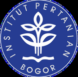B.Eng., IPB University 2025</span></div>
    </div>
    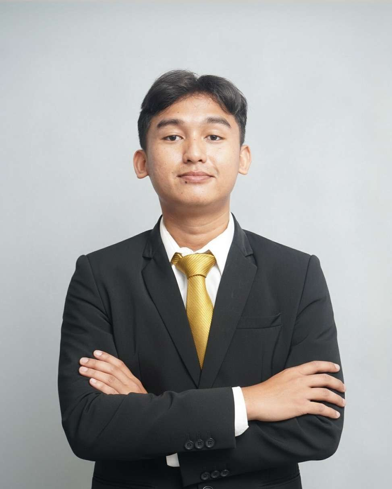
  </div>
  <div class="heroimgs">
    <figure class="fig"><button data-cap="Reliable Workshop: Line 601">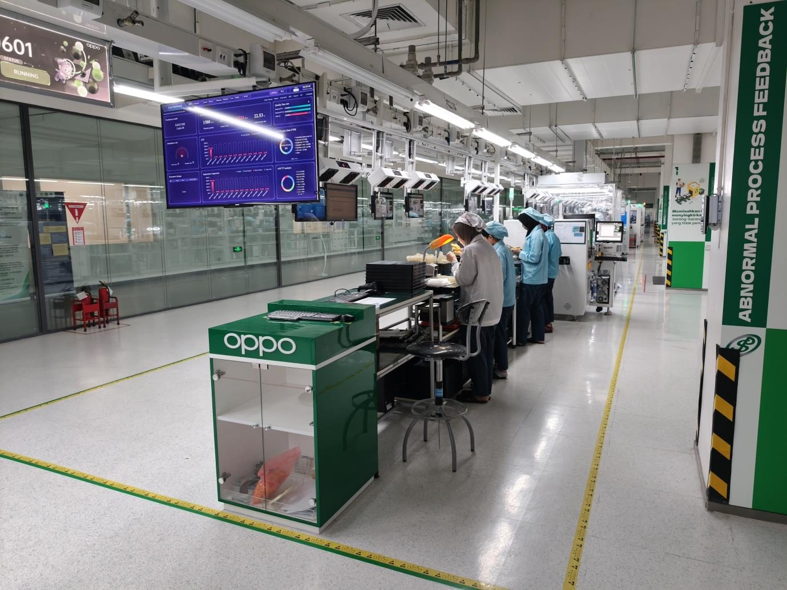<span class="lbl">Reliable Workshop</span></button></figure>
    <figure class="fig"><button data-cap="Workshop 6 layout, digital twin">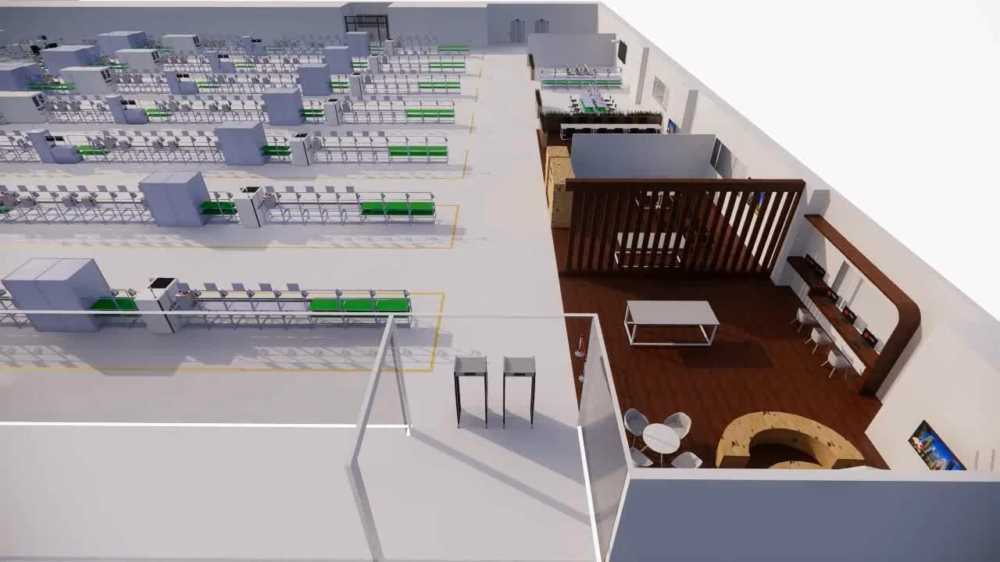<span class="lbl">Digital twin</span></button></figure>
    <figure class="fig"><button data-cap="Screen-guard monitoring unit installed in the machine">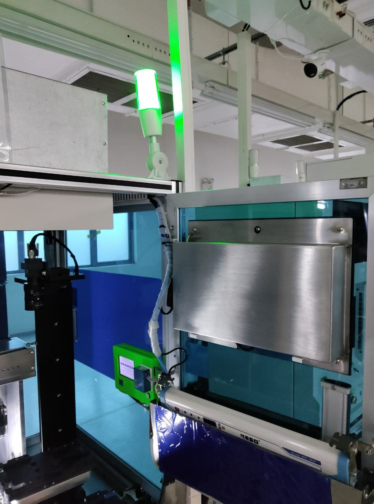<span class="lbl">Screen-guard monitoring</span></button></figure>
  </div>
  <div class="numbers tnum" aria-label="Project results">
    <div class="num"><div class="v">&lt;3 s</div><div class="l">QA check per color box, was 15–20 s</div></div>
    <div class="num"><div class="v">7</div><div class="l">packaging lines running QA Pass</div></div>
    <div class="num"><div class="v">30+</div><div class="l">production machines modeled in 3D</div></div>
    <div class="num"><div class="v">98.8%</div><div class="l">line-plan accuracy vs MPS target</div></div>
    <div class="num"><div class="v">5m→3s</div><div class="l">to generate the daily line plan</div></div>
    <div class="num"><div class="v">99.3%</div><div class="l">seal detection accuracy (mAP50)</div></div>
  </div>

<section class="s" id="experience">
  <div class="head"><div class="idx">Experience</div><div><h2>Work at OPPO Indonesia</h2><p> OPPO Indonesia Manufacturing · Tangerang</p></div></div>
  <div class="xp">
    <ol class="xtl">
      <li><span class="xd">Jun 2026 – now</span><div><h3>Digital Innovation Engineering Lead</h3><p>Lead the Mechatronics, Software &amp; AI and Visual Design teams, turning production requests into deployed systems.</p><div class="kpis"><span><b>22</b>projects delivered</span><span><b>3</b>teams</span><span><b>Q2 2026</b>Best Innovation Team</span></div></div></li>
      <li><span class="xd">Dec 2025 – Jun 2026</span><div><h3>Mechatronic Engineer Intern</h3><p>Intern team leader for 9 interns; built QA Pass, UWB indoor tracking, jigs and fixtures.</p><div class="kpis"><span><b>80%</b>faster QA check</span><span><b>10+</b>staff tracked live</span></div></div></li>
      <li><span class="xd">Sep – Dec 2025</span><div><h3>3D Design Engineer Intern</h3><p>Reverse-engineered production machines and planned lines for the factory digital twin.</p><div class="kpis"><span><b>30+</b>machines in 3D</span><span><b>15</b>lines planned</span></div></div></li>
    </ol>
    <figure class="fig xpimg"><button data-cap="QA Pass in use at final packaging">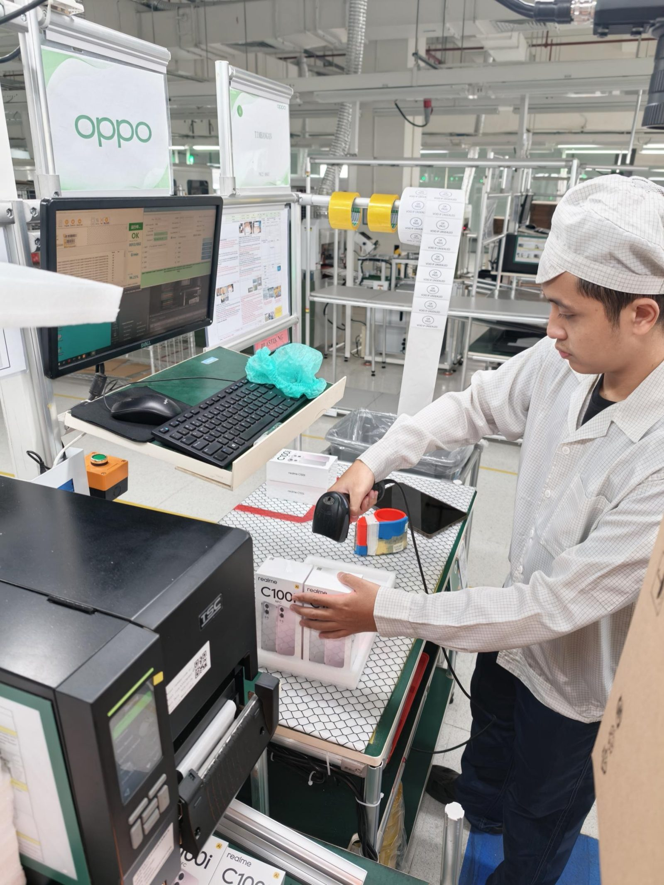</button></figure>
  </div>
</section>

<section class="s" id="timeline">
  <div class="head"><div class="idx">Timeline</div><div><h2>Sep 2025 – Oct 2026 at OPPO</h2><p>All 22 projects by month, grouped by discipline. Click a project name for details.</p></div></div>
  <div class="gt"><div class="gtin">
    <div class="gr ghd"><span></span><div class="gtrack"><span>Sep 25</span><span>Oct</span><span>Nov</span><span>Dec</span><span>Jan 26</span><span>Feb</span><span>Mar</span><span>Apr</span><span>May</span><span>Jun</span><span>Jul</span><span>Aug</span><span>Sep</span><span>Oct</span></div></div>
    <div class="gr groles"><span class="gl mono">Role</span><div class="gtrack"><b style="grid-column:1/4;background:var(--sheet-2)">3D Design Engineer Intern</b><b style="grid-column:4/10;background:var(--amber-2)">Mechatronic Engineer Intern · intern team leader</b><b style="grid-column:10/15;background:var(--green-2)">Digital Innovation Engineering Lead</b></div></div>
    <div class="gr ggrp"><span class="gl">Visual Design</span><div class="gtrack"></div></div>
    <div class="gr"><button type="button" class="gl gopen" data-p="Factory Digital Twin">Factory Digital Twin</button><div class="gtrack"><i class="v" style="grid-column:1/8"></i></div></div>
    <div class="gr"><button type="button" class="gl gopen" data-p="Reliable Workshop">Reliable Workshop</button><div class="gtrack"><i class="v" style="grid-column:7/12"></i></div></div>
    <div class="gr"><button type="button" class="gl gopen" data-p="Workbench & Tool Designs">Workbench & tools</button><div class="gtrack"><i class="v" style="grid-column:7/11"></i></div></div>
    <div class="gr"><button type="button" class="gl gopen" data-p="TrainVerse VR/AR">TrainVerse VR/AR</button><div class="gtrack"><i class="v" style="grid-column:8/10"></i></div></div>
    <div class="gr ggrp"><span class="gl">Mechatronics</span><div class="gtrack"></div></div>
    <div class="gr"><button type="button" class="gl gopen" data-p="COBOT Pick-and-Place">COBOT Pick-and-Place</button><div class="gtrack"><i class="m" style="grid-column:1/5"></i></div></div>
    <div class="gr"><button type="button" class="gl gopen" data-p="Screen-Guard Preventive Maintenance">Screen-guard maintenance</button><div class="gtrack"><i class="m" style="grid-column:1/5"></i><i class="m" style="grid-column:12/15"></i></div></div>
    <div class="gr"><button type="button" class="gl gopen" data-p="Vacuum Bin">Vacuum Bin</button><div class="gtrack"><i class="m" style="grid-column:3/5"></i></div></div>
    <div class="gr"><button type="button" class="gl gopen" data-p="Sign Holder & Printed Parts">Sign holder & printed parts</button><div class="gtrack"><i class="m" style="grid-column:3/5"></i></div></div>
    <div class="gr"><button type="button" class="gl gopen" data-p="UWB Indoor Tracking">UWB Indoor Tracking</button><div class="gtrack"><i class="m" style="grid-column:4/8"></i></div></div>
    <div class="gr"><button type="button" class="gl gopen" data-p="QA Pass Automation">QA Pass Automation</button><div class="gtrack"><i class="m" style="grid-column:4/8"></i><i class="m" style="grid-column:12/15"></i></div></div>
    <div class="gr"><button type="button" class="gl gopen" data-p="AutoClamping Rack Gen 3">AutoClamping Rack Gen 3</button><div class="gtrack"><i class="m" style="grid-column:8/11"></i></div></div>
    <div class="gr ggrp"><span class="gl">Software & AI</span><div class="gtrack"></div></div>
    <div class="gr"><button type="button" class="gl gopen" data-p="MPS v2.0 Line Planning">MPS v2.0 Line Planning</button><div class="gtrack"><i class="s" style="grid-column:8/11"></i></div></div>
    <div class="gr"><button type="button" class="gl gopen" data-p="AI Tamper-Proof Camera">AI Tamper-Proof Camera</button><div class="gtrack"><i class="s" style="grid-column:8/11"></i></div></div>
    <div class="gr"><button type="button" class="gl gopen" data-p="IMEI Planning">IMEI Planning</button><div class="gtrack"><i class="s" style="grid-column:9/14"></i></div></div>
    <div class="gr"><button type="button" class="gl gopen" data-p="VisionSOP">VisionSOP</button><div class="gtrack"><i class="s" style="grid-column:9/14"></i></div></div>
    <div class="gr"><button type="button" class="gl gopen" data-p="Ollie HR Agent">Ollie HR Agent</button><div class="gtrack"><i class="s" style="grid-column:9/14"></i></div></div>
    <div class="gr"><button type="button" class="gl gopen" data-p="Digital Checklist">Digital Checklist</button><div class="gtrack"><i class="s" style="grid-column:11/15"></i></div></div>
    <div class="gr"><button type="button" class="gl gopen" data-p="AI Monitoring Dashboard">AI Monitoring Dashboard</button><div class="gtrack"><i class="s" style="grid-column:11/15"></i></div></div>
    <div class="gr"><button type="button" class="gl gopen" data-p="SMED Changeover">SMED Changeover</button><div class="gtrack"><i class="s" style="grid-column:11/15"></i></div></div>
    <div class="gr"><button type="button" class="gl gopen" data-p="5M Manpower Tracking">5M Manpower Tracking</button><div class="gtrack"><i class="s" style="grid-column:11/15"></i></div></div>
    <div class="gr"><button type="button" class="gl gopen" data-p="CI Digital Platform">CI Digital Platform</button><div class="gtrack"><i class="s" style="grid-column:11/15"></i></div></div>
    <div class="gr"><button type="button" class="gl gopen" data-p="PRO-GATE">PRO-GATE</button><div class="gtrack"><i class="s" style="grid-column:12/15"></i></div></div>
    <div class="gr gms"><span class="gl mono">Award</span><div class="gtrack"><em style="grid-column:10/11">★ Best Innovation Team Q2 2026</em></div></div>
  </div></div>
  <div class="glegend"><span><i class="v"></i>Visual Design</span><span><i class="m"></i>Mechatronics</span><span><i class="s"></i>Software &amp; AI</span></div>
</section>

<section class="s" id="cases">
  <div class="head"><div class="idx">Case studies</div><div><h2>Featured Projects</h2><p>Each one shows the problem, what was built, the results and my part. Click any image to enlarge it.</p></div></div>

  <article class="case" id="c-reliable">
    <div class="chead"><span class="no">01</span><div><h3>Reliable Workshop</h3><p class="sub">A large-scale program of sub-projects to digitize and automate Workshop 6</p></div><span class="when">Mar–Jul 2026</span></div>
    <div class="cin">
      <div class="story">
        <div><h4>Problem</h4><p>Workshop 6 still ran on paper: printed SOPs at every station, handwritten check sheets, and KPI and quality data that leaders only saw after the shift. The factory had no model line showing what a fully digital workshop should look like, and no dedicated space to train operators and engineers.</p></div>
        <div><h4>What was built</h4><p>Line 601 became the model digital line: a live line dashboard, digital e-SOP tablets and ionizing (ESD) blowers at every station, and a leader workstation. TV walls above Workshop 6 stream KPI achievement, AOI inspection data and AI-CCTV of critical processes. Around it, an Engineering Training Center with four dojos and an ILTC room, plus a Wall of Fame, Product Showcase and Hall of Stars.</p></div>
        <div class="part"><h4>My part</h4><p>Designed the full workshop layout and every station in 3D: workbench, leader's desk, display case and e-SOP frames. Planned and ran the schedule for all 15 sub-projects, managed vendors, including importing slide-rail material at half the local price, and supervised installation on site through to handover.</p></div>
      </div>
      <div class="kpis tnum">
        <div class="kpi"><div class="v">15</div><div class="l">sub-projects delivered</div></div>
        <div class="kpi"><div class="v">100%</div><div class="l">of Line 601 stations on digital e-SOP</div></div>
        <div class="kpi"><div class="v">½</div><div class="l">of local price for rail material, sourced from China</div></div>
        <div class="kpi"><div class="v">4</div><div class="l">training dojos plus ILTC room</div></div>
      </div>
      <div class="mosaic">
        <figure class="fig w4 h2"><button data-cap="Line 601: line dashboard, leader station, e-SOP at every station"><span class="lbl">Line 601</span></button></figure>
        <figure class="fig w2"><button data-cap="Digital e-SOP monitors with ionizing blowers">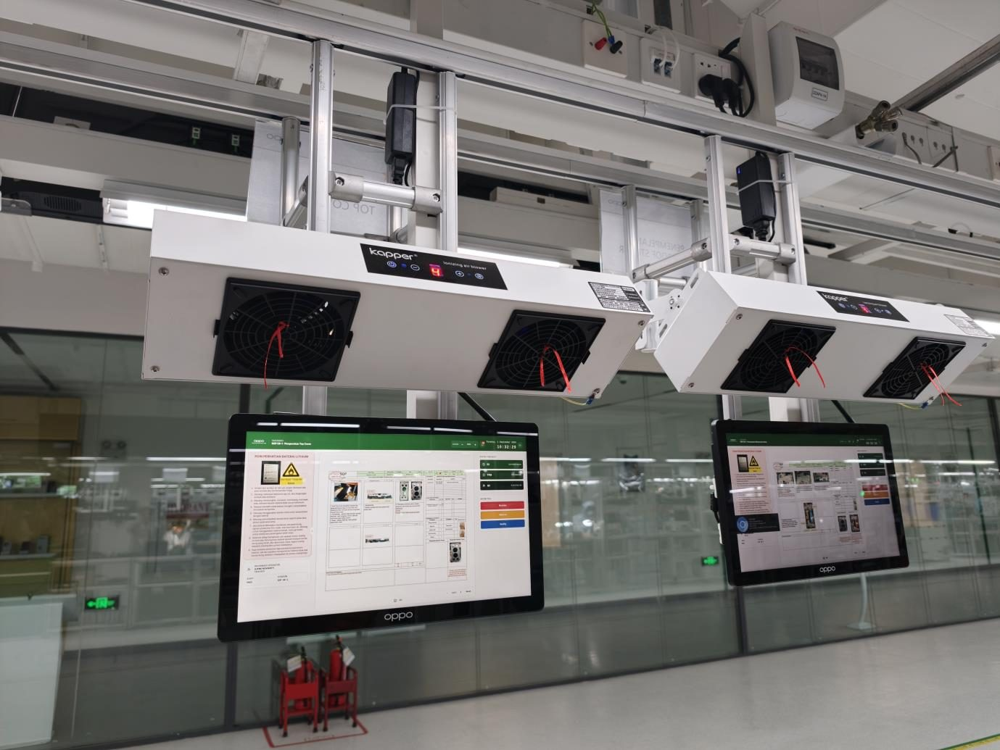<span class="lbl">Digital e-SOP</span></button></figure>
        <figure class="fig w2"><button data-cap="TV walls: KPI, AOI and live AI-CCTV">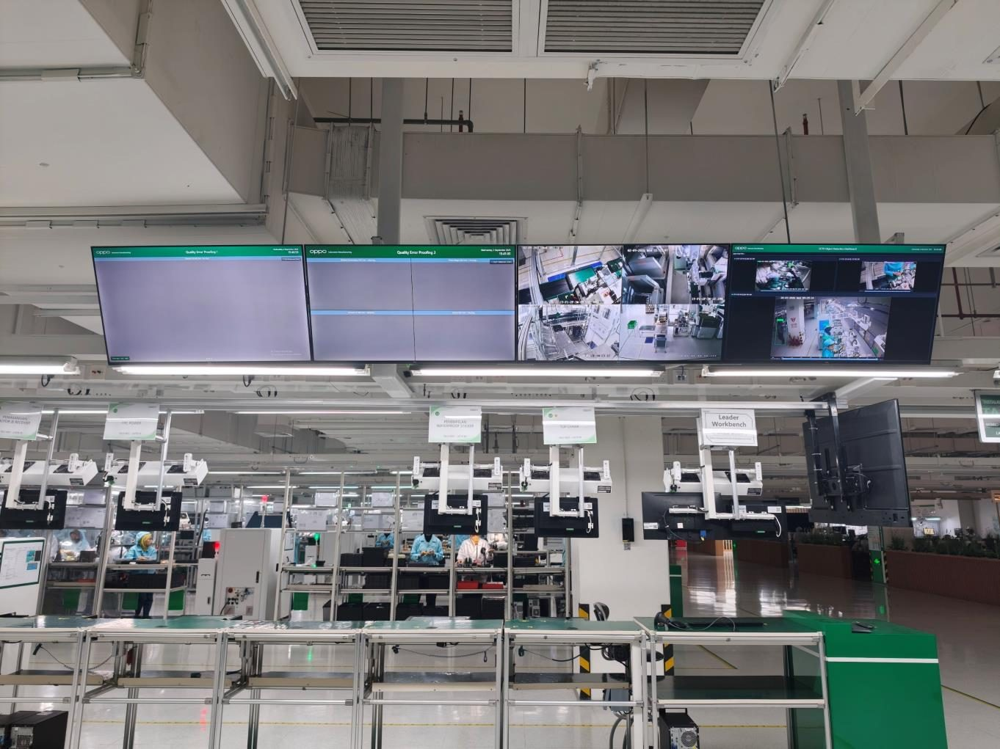<span class="lbl">TV dashboards</span></button></figure>
        <figure class="fig w2"><button data-cap="ILTC training and meeting room">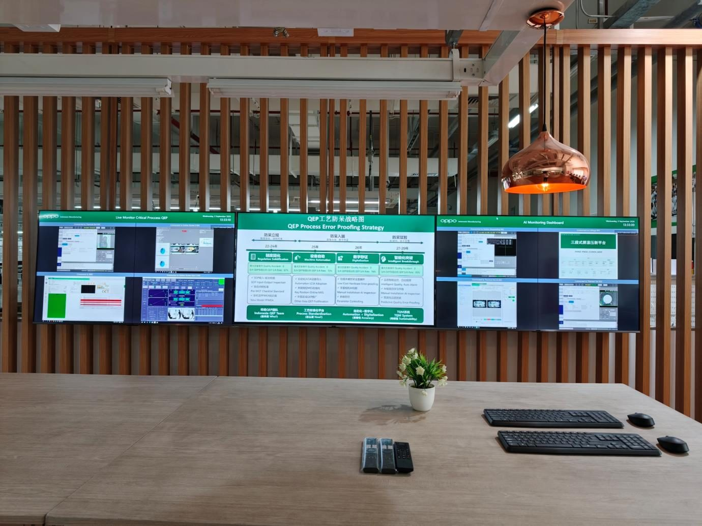<span class="lbl">ILTC</span></button></figure>
        <figure class="fig w2"><button data-cap="Operator Dojo">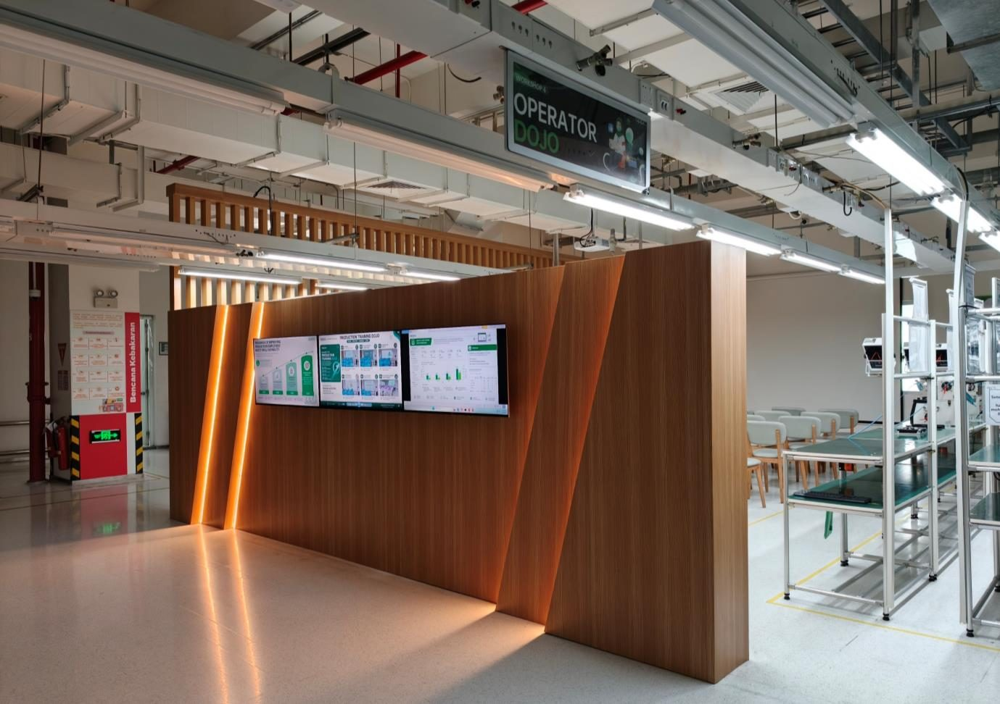<span class="lbl">Operator Dojo</span></button></figure>
        <figure class="fig w2"><button data-cap="TPM Dojo">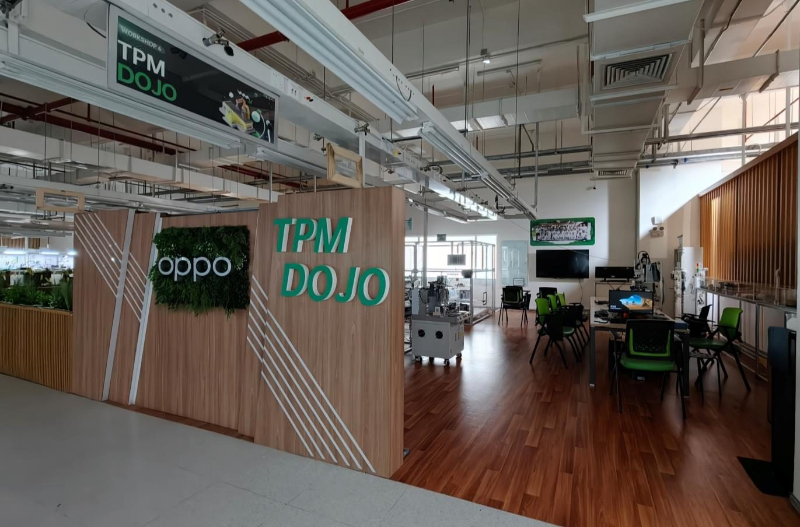<span class="lbl">TPM Dojo</span></button></figure>
        <figure class="fig w2"><button data-cap="Wall of Fame">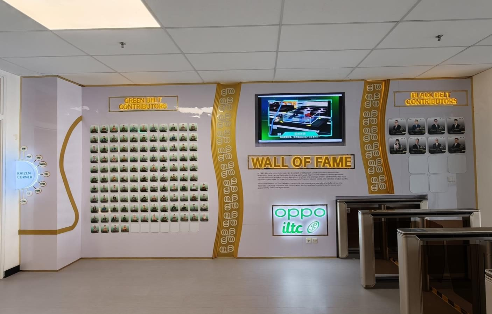<span class="lbl">Wall of Fame</span></button></figure>
        <figure class="fig w2"><button data-cap="Hall of Stars">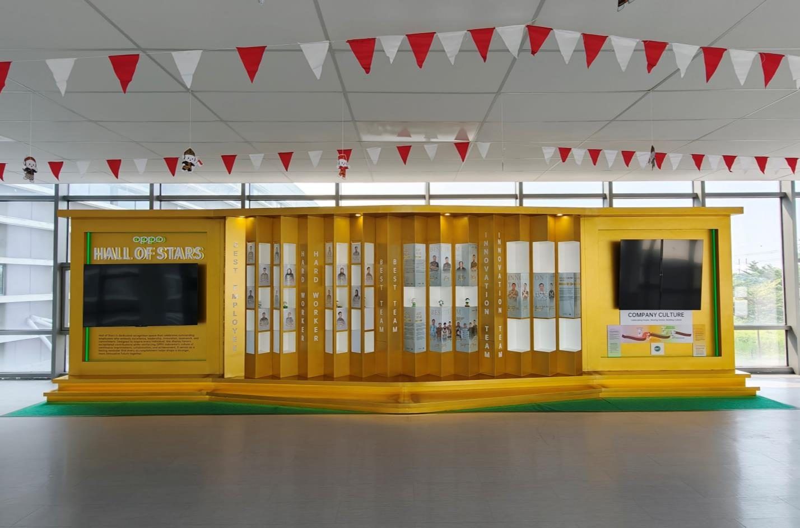<span class="lbl">Hall of Stars</span></button></figure>
        <figure class="fig w2"><button data-cap="Product Showcase">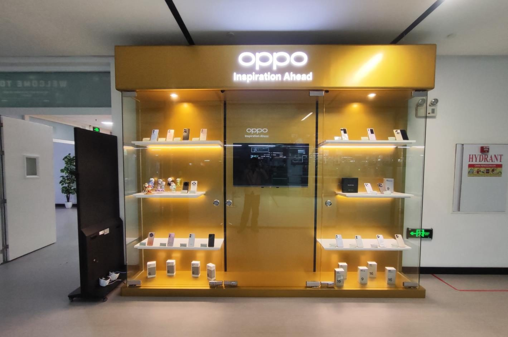<span class="lbl">Product Showcase</span></button></figure>
      </div>
      <div class="cols">
        <div class="box">
          <p class="ph4"><span>3D design and the built result</span></p>
          <div style="display:grid;grid-template-columns:1fr 1fr;gap:14px">
            <div><div class="swaphead"><b>Leader's desk</b><div class="seg" role="group" aria-label="Leader's desk view"><button type="button" aria-pressed="true" data-swap="s1" data-to="a">Design</button><button type="button" aria-pressed="false" data-swap="s1" data-to="b">Built</button></div></div>
              <div class="swap" id="s1" data-state="a" style="--ar:3/4">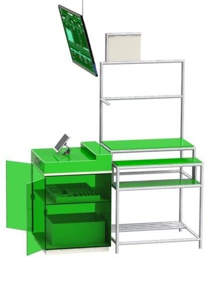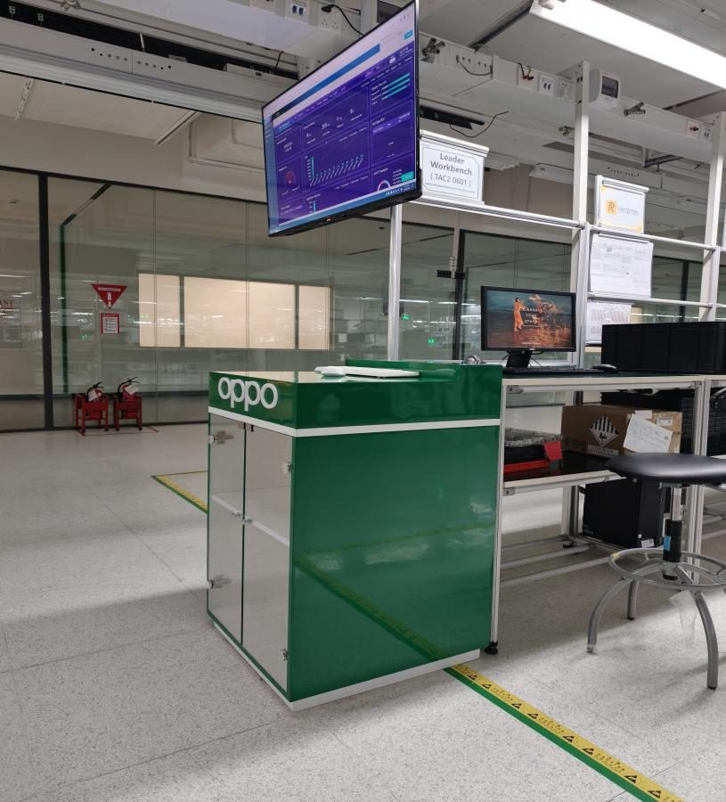</div></div>
            <div><div class="swaphead"><b>Display case</b><div class="seg" role="group" aria-label="Display case view"><button type="button" aria-pressed="true" data-swap="s2" data-to="a">Design</button><button type="button" aria-pressed="false" data-swap="s2" data-to="b">Built</button></div></div>
              <div class="swap" id="s2" data-state="a" style="--ar:3/4">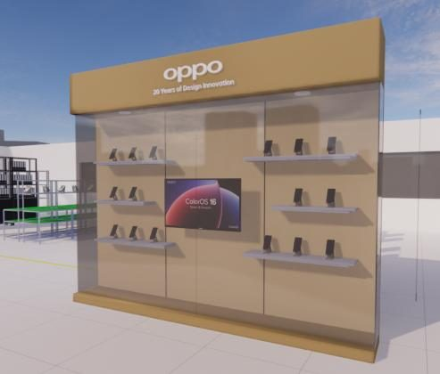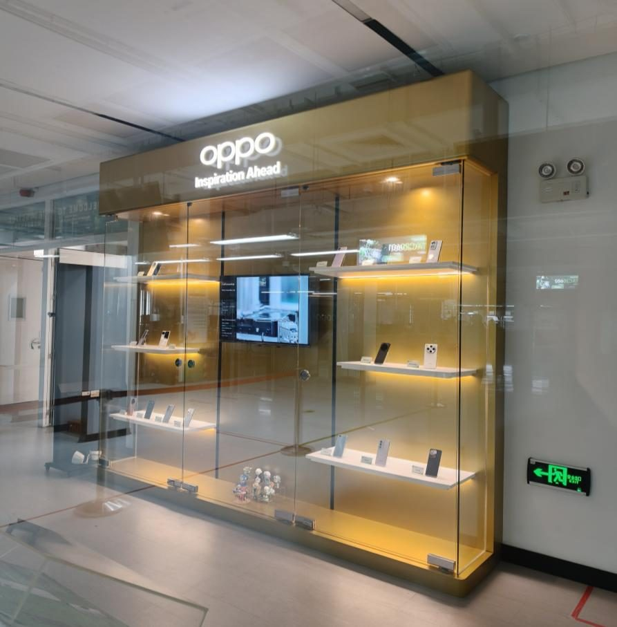</div></div>
          </div>
        </div>
        <div class="box">
          <p class="ph4"><span>Sub-projects by due date, 2026</span></p>
          <div class="gantt"><div class="gin">
            <div class="grow hd"><span></span><div class="gmonths"><span>Mar</span><span>Apr</span><span>May</span><span>Jun</span><span>Jul</span></div></div>
            <div class="grow grp"><span>601 Line construction</span><div class="gbar"><i style="left:95%"></i></div></div>
            <div class="grow"><span>ION fan, monitor, e-SOP frame</span><div class="gbar"><i style="left:91%"></i></div></div>
            <div class="grow"><span>ION fans installed</span><div class="gbar"><i style="left:87%"></i></div></div>
            <div class="grow"><span>e-SOP tablets installed</span><div class="gbar"><i style="left:87%"></i></div></div>
            <div class="grow"><span>Worktable cutting</span><div class="gbar"><i style="left:96%"></i></div></div>
            <div class="grow"><span>Leader's table</span><div class="gbar"><i style="left:59%"></i></div></div>
            <div class="grow grp"><span>Workshop 6 digitalization</span><div class="gbar"><i style="left:39%"></i></div></div>
            <div class="grow"><span>TV dashboards (4)</span><div class="gbar"><i style="left:39%"></i></div></div>
            <div class="grow"><span>Product Showcase</span><div class="gbar"><i style="left:11%"></i></div></div>
            <div class="grow"><span>Wall of Fame</span><div class="gbar"><i style="left:26%"></i></div></div>
            <div class="grow grp"><span>Engineering Training Center</span><div class="gbar"><i style="left:77%"></i></div></div>
            <div class="grow"><span>PE Dojo</span><div class="gbar"><i style="left:49%"></i></div></div>
            <div class="grow"><span>Operator Dojo</span><div class="gbar"><i style="left:77%"></i></div></div>
          </div></div>
        </div>
      </div>
    </div>
  </article>

  <article class="case" id="c-twin">
    <div class="chead"><span class="no">02</span><div><h3>Factory Digital Twin &amp; Changeover</h3><p class="sub">A 3D replica of machines, workshops and the factory, used to run line changeovers</p></div><span class="when">Sep 2025 – Oct 2026</span></div>
    <div class="cin">
      <div class="story">
        <div><h4>Problem</h4><p>Every layout decision was made on 2D AutoCAD drawings. Machines clashed with structures nobody had drawn, causing up to 15% delay during maintenance and machine moves, and expansion plans could not be checked before money was spent. Changeovers were tracked in two separate ME and BPM dashboards.</p></div>
        <div><h4>What was built</h4><p>Machines measured on site and modeled in SolidWorks; Workshop 5, Workshop 6 and full-factory layouts in SketchUp and Enscape. On top: a 3D changeover dashboard and one merged ME–BPM changeover system with a shared task library and automatic planned-vs-actual timing.</p></div>
        <div class="part"><h4>My part</h4><p>Measured and modeled 30+ machines myself and built the Workshop 5, Workshop 6 and full-factory models over 28 weeks. Produced the 3D line models the changeover dashboard runs on, and worked with the software team to merge ME and BPM changeovers into one system.</p></div>
      </div>
      <div class="kpis tnum">
        <div class="kpi"><div class="v">30+</div><div class="l">machines reverse-engineered</div></div>
        <div class="kpi"><div class="v">15</div><div class="l">production lines planned</div></div>
        <div class="kpi"><div class="v">93</div><div class="l">standard changeover tasks</div></div>
        <div class="kpi"><div class="v">5</div><div class="l">teams on one changeover view (IE, ESD, ME, IPQC, PE)</div></div>
      </div>
      <div class="panel">
        <h4><span>Measure → model → lay out → operate</span></h4>
        <div class="proc">
          <figure class="fig"><button data-cap="Dimensions measured on the real machine">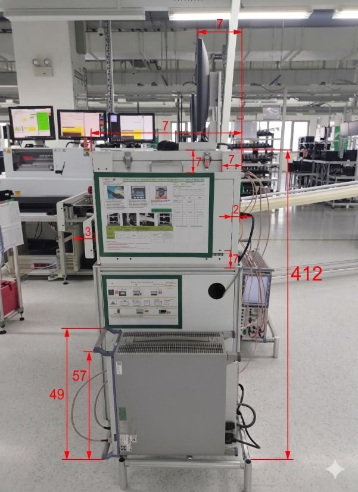</button><figcaption>1 · Measure on site</figcaption></figure>
          <figure class="fig contain"><button data-cap="Machine modeled in SolidWorks">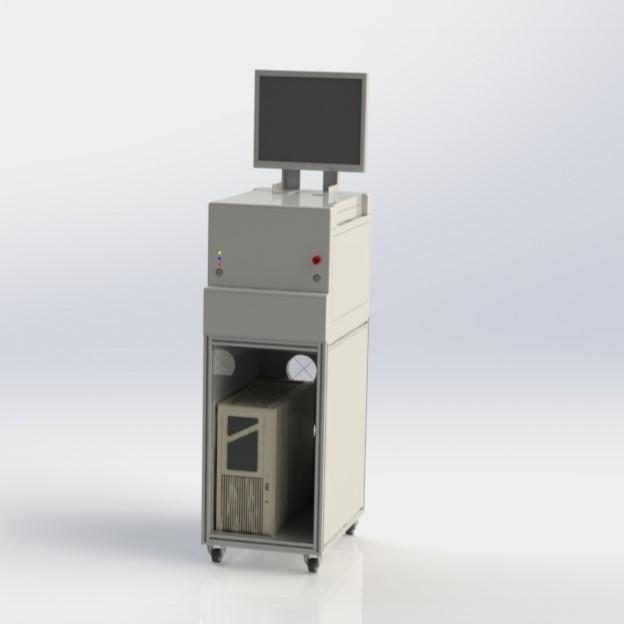</button><figcaption>2 · Model in SolidWorks</figcaption></figure>
          <figure class="fig"><button data-cap="Placed in the Workshop 6 layout"></button><figcaption>3 · Lay out the workshop</figcaption></figure>
          <figure class="fig"><button data-cap="3D line in the changeover dashboard">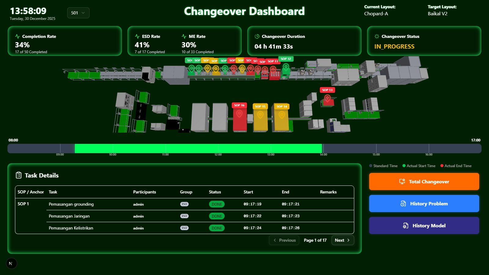</button><figcaption>4 · Run changeovers</figcaption></figure>
        </div>
        <div class="phases">
          <div><b>WK 1–4</b>Installation line machines</div><div><b>WK 5–8</b>Testing line machines</div><div><b>WK 9–12</b>Workshop 6 assembly</div><div><b>WK 13–16</b>Workshop 5 assembly</div><div><b>WK 17–20</b>Workshop 6 layout</div><div><b>WK 21–24</b>Workshop 5 layout</div><div><b>WK 25–28</b>Full factory</div>
        </div>
      </div>
      <div class="panel">
        <h4><span>Machine library</span><span>Scroll · 8 of 30+</span></h4>
        <div class="strip">
          <figure class="fig contain"><button data-cap="Production machine model"></button></figure>
          <figure class="fig contain"><button data-cap="Production machine model">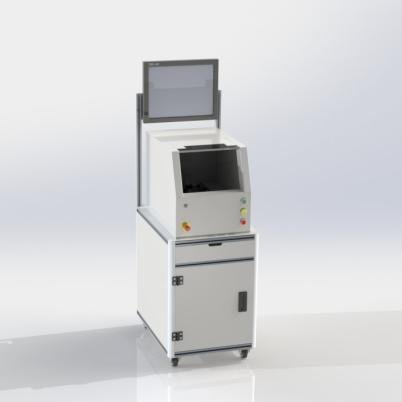</button></figure>
          <figure class="fig contain"><button data-cap="Production machine model">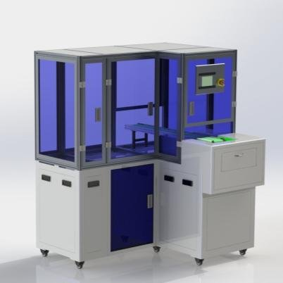</button></figure>
          <figure class="fig contain"><button data-cap="Production machine model">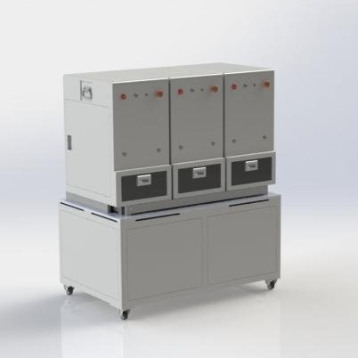</button></figure>
          <figure class="fig contain"><button data-cap="Production machine model">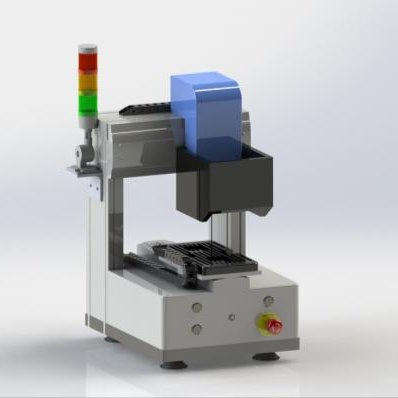</button></figure>
          <figure class="fig contain"><button data-cap="Production machine model">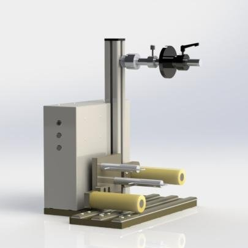</button></figure>
          <figure class="fig contain"><button data-cap="Production machine model">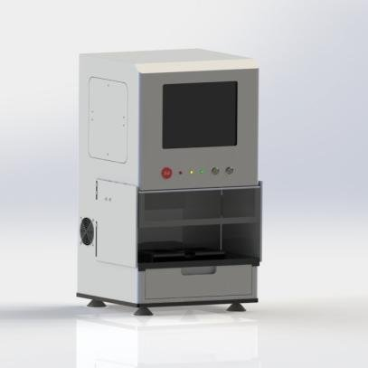</button></figure>
          <figure class="fig contain"><button data-cap="Production machine model">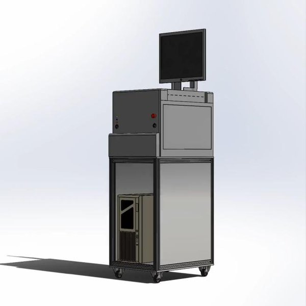</button></figure>
        </div>
      </div>
      <div class="cols">
        <figure class="fig"><button data-cap="Workshop 5 layout">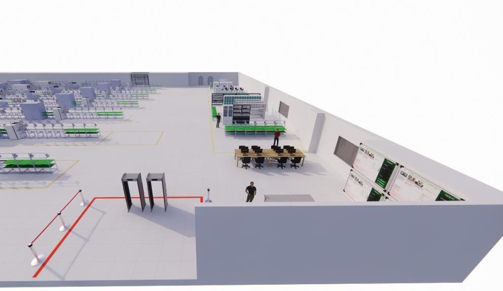</button><figcaption>Workshop 5 layout</figcaption></figure>
        <figure class="fig"><button data-cap="Factory exterior, Enscape render">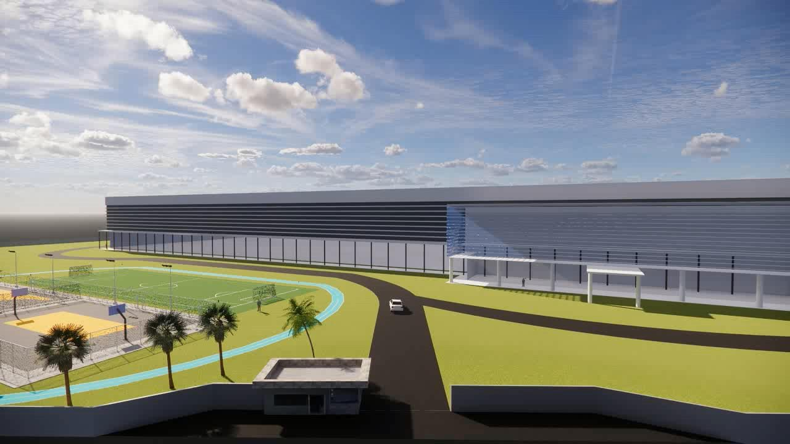</button><figcaption>Factory exterior, Enscape</figcaption></figure>
        <figure class="fig"><button data-cap="Changeover admin: 3D line upload, SOP pins, task library">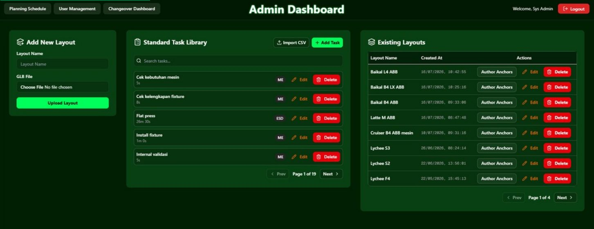</button><figcaption>Changeover admin and task library</figcaption></figure>
        <figure class="fig"><button data-cap="Changeover schedule: planned vs actual duration">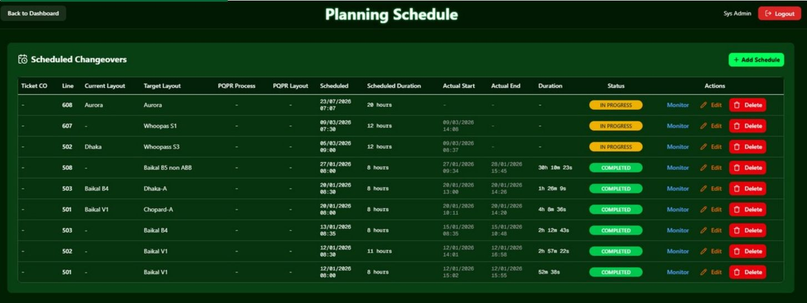</button><figcaption>Planned vs actual, recorded automatically</figcaption></figure>
      </div>
    </div>
  </article>

  <article class="case" id="c-qa">
    <div class="chead"><span class="no">03</span><div><h3>QA Pass Automation</h3><p class="sub">Sensor-triggered IMEI scanning at the final packaging step</p></div><span class="when">Dec 2025 – Oct 2026</span></div>
    <div class="cin">
      <div class="story">
        <div><h4>Problem</h4><p>The last check before boxes leave the line was fully manual. An operator confirmed the QA sticker, then scanned 10 IMEI codes one by one: 15–20 seconds per box, on every line, with nothing to stop a box with a missing sticker. The automated version existed on just one line.</p></div>
        <div><h4>What was built</h4><p>An IR sensor detects the box, a color sensor confirms the white QA sticker, then an overhead camera reads all 10 IMEI codes at once. An andon lamp shows the result. A custom PCB and 3D-printed enclosure make every unit the same to install and maintain.</p></div>
        <div class="part"><h4>My part</h4><p>Designed the sensor mount and enclosure; built, wired, programmed and tested the units with the team. Standardized the parts list and install steps, rolled them out line by line until all seven lines ran QA Pass, and closed with manuals and a formal handover to Manufacturing Engineering.</p></div>
      </div>
      <div class="cols">
        <div class="box">
          <p class="ph4"><span>Seconds per color box (10 units)</span></p>
          <div class="bars anim">
            <div class="bar"><span>Manual</span><div class="tr"><div class="fl" style="width:75%"></div><div class="fl r" style="left:75%;width:25%"></div></div><span class="vv">15–20 s</span></div>
            <div class="bar"><span>QA Pass</span><div class="tr"><div class="fl g" style="width:14%"></div></div><span class="vv" style="color:var(--green)">&lt;3 s</span></div>
          </div>
          <div class="axis"><span></span><div class="ticks"><span>0</span><span>5</span><span>10</span><span>15</span><span>20 s</span></div><span></span></div>
          <p style="font-size:14px;color:var(--ink-2);margin-top:14px">About 80% faster per box, and a box without its sticker cannot be scanned.</p>
        </div>
        <div class="box">
          <p class="ph4"><span>Lines running QA Pass, Workshop 6</span></p>
          <div class="lines">
            <div class="ln"><div class="d"></div><b>601</b></div><div class="ln"><div class="d"></div><b>602</b></div><div class="ln"><div class="d"></div><b>603</b></div><div class="ln"><div class="d"></div><b>604</b></div><div class="ln"><div class="d"></div><b>605</b></div><div class="ln"><div class="d"></div><b>606</b></div><div class="ln"><div class="d"></div><b>607</b></div>
          </div>
          <p style="font-size:14px;color:var(--ink-2);margin-top:14px">Followed by standard machine settings, user and maintenance manuals, a trial with ME, and handover.</p>
        </div>
      </div>
      <div class="panel">
        <h4><span>How it works</span></h4>
        <div class="how">
          <div><b>01 · Detect</b><p>IR sensor sees a color box arrive.</p></div>
          <div><b>02 · Verify</b><p>Color sensor checks the sticker: white means OK.</p></div>
          <div><b>03 · Scan</b><p>Overhead camera reads all 10 IMEI codes.</p></div>
          <div><b>04 · Signal</b><p>Andon lamp shows the result.</p></div>
        </div>
        <div class="mosaic" style="margin-top:12px">
          <figure class="fig w3"><button data-cap="QA Pass on the packaging line">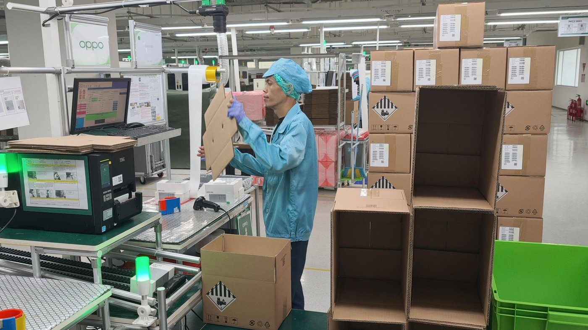</button></figure>
          <figure class="fig w3"><button data-cap="Technical briefing and handover with Manufacturing Engineering">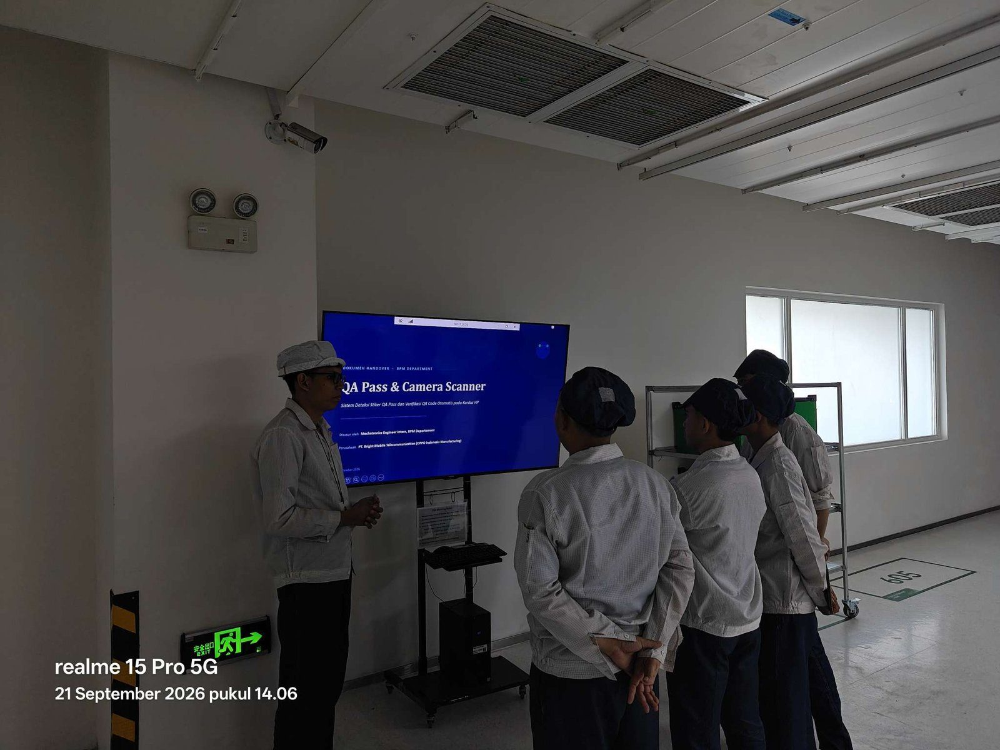</button></figure>
          <figure class="fig contain w2"><button data-cap="Custom PCB, 3D view">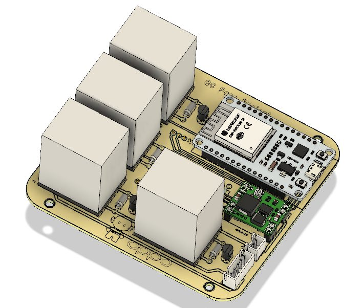<span class="lbl">PCB design</span></button></figure>
          <figure class="fig w2"><button data-cap="Printed PCB">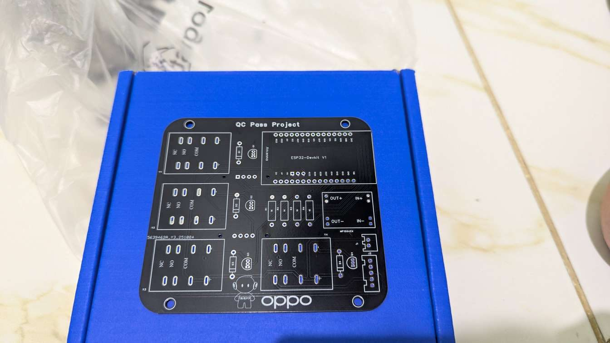<span class="lbl">PCB</span></button></figure>
          <figure class="fig w2"><button data-cap="Sensor unit in its 3D-printed enclosure">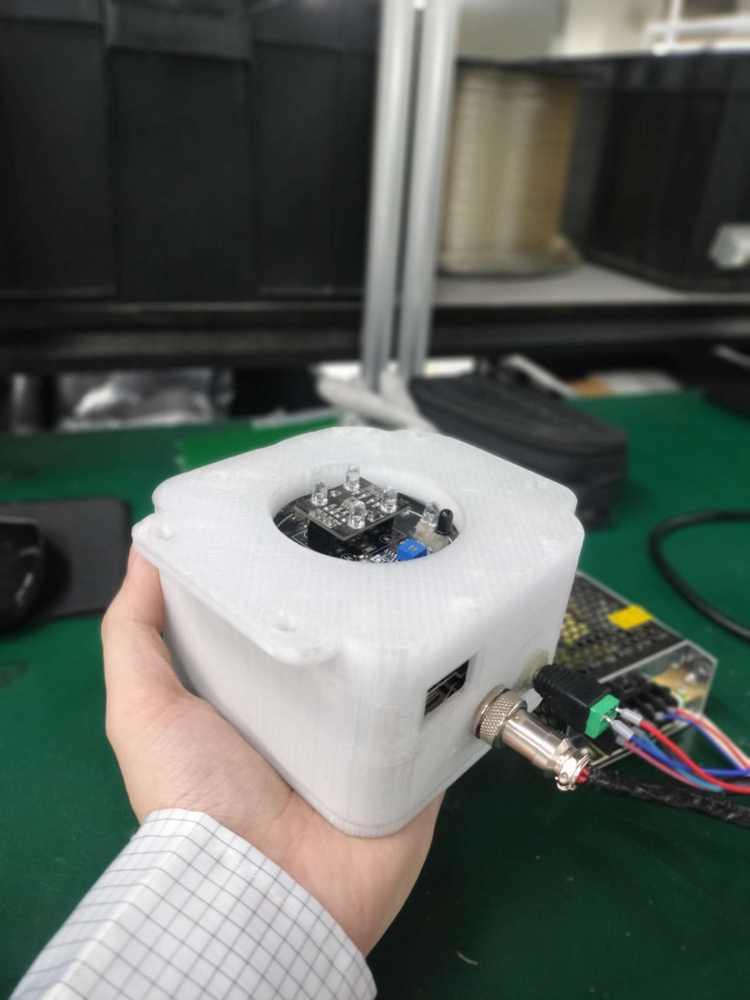<span class="lbl">Sensor unit</span></button></figure>
        </div>
      </div>
    </div>
  </article>

  <article class="case" id="c-tv">
    <div class="chead"><span class="no">04</span><div><h3>TrainVerse VR/AR Training</h3><p class="sub">Smartphone assembly practice in VR, with an AI voice coach and AR on any phone</p></div><span class="when">Apr–May 2026</span></div>
    <div class="cin">
      <div class="story">
        <div><h4>Problem</h4><p>Every new phone model or machine meant training on the real line: broken connectors and circuit boards, machines held idle for practice, engineers flown to China to learn new equipment, and new operators learning next to live machinery.</p></div>
        <div><h4>What was built</h4><p>VR assembly of a real phone model with hand tracking and automatic scoring of SOP order, errors and time. An AI coach that understands spoken Indonesian. AR explanations from a QR code at the station. A 1:1 virtual factory tour. In use at the Indonesia plant.</p></div>
        <div class="part"><h4>My part</h4><p>One of a four-person team. I made the 3D: machine and station models from SolidWorks, hand models and animation in Blender, and asset optimization for the headset.</p></div>
      </div>
      <div class="mosaic">
        <figure class="fig w4 h2"><button data-cap="VR assembly simulation with tracked hands">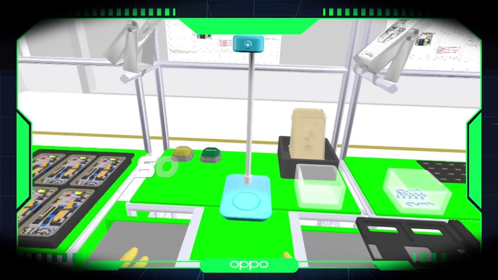<span class="lbl">VR assembly</span></button></figure>
        <figure class="fig w2"><button data-cap="Hand tracking at the workstation">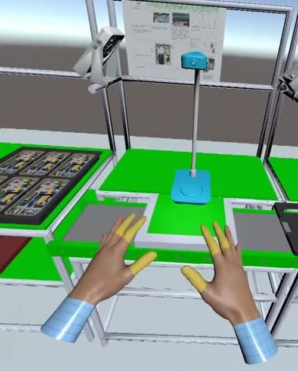<span class="lbl">Hand tracking</span></button></figure>
        <figure class="fig w2"><button data-cap="Hand model in Blender">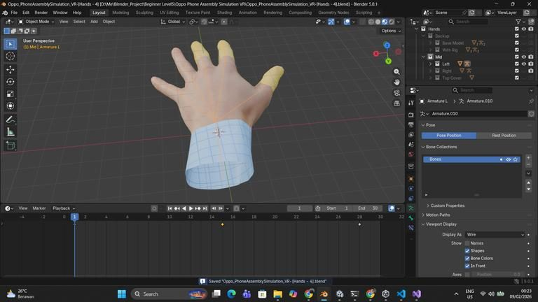<span class="lbl">Hand model</span></button></figure>
        <figure class="fig w2"><button data-cap="AR mode: user view and phone view">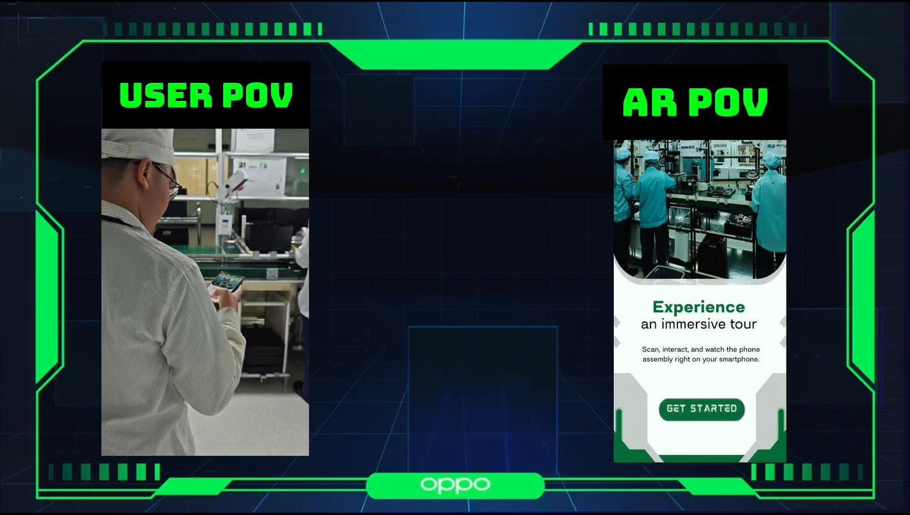<span class="lbl">AR on phone</span></button></figure>
        <figure class="fig w2"><button data-cap="1:1 virtual factory tour">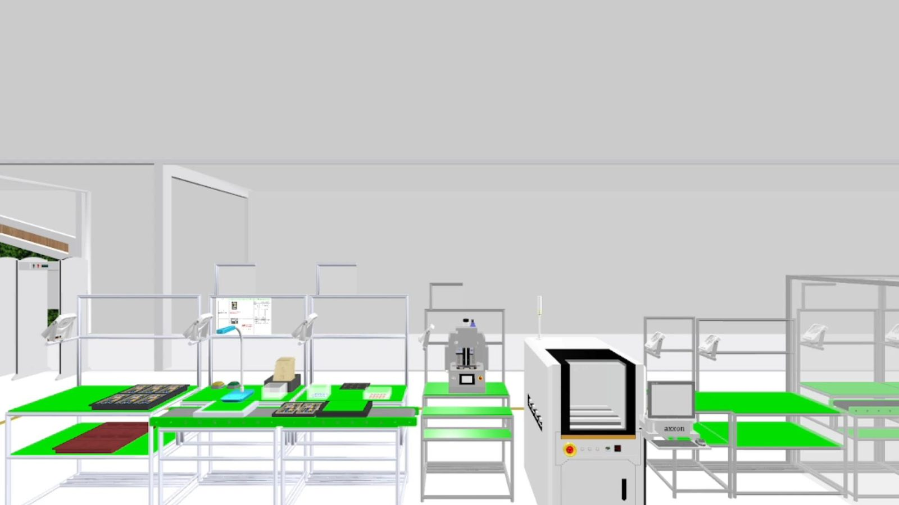<span class="lbl">Factory tour</span></button></figure>
        <figure class="fig w2"><button data-cap="Assessment result in VR">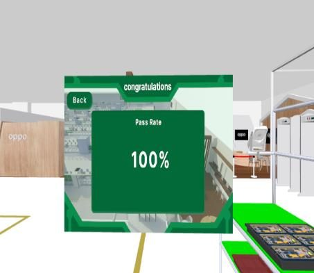<span class="lbl">Auto scoring</span></button></figure>
      </div>
      <div class="panel">
        <h4><span>System specs</span></h4>
        <div class="spec tnum">
          <div><div class="v">21</div><div class="l">hand joints tracked</div></div>
          <div><div class="v">&lt;20 ms</div><div class="l">hand input latency</div></div>
          <div><div class="v">±0.1 mm</div><div class="l">model tolerance</div></div>
          <div><div class="v">90 Hz</div><div class="l">target refresh rate</div></div>
          <div><div class="v">94.2%</div><div class="l">Indonesian speech-to-text accuracy</div></div>
          <div><div class="v">&lt;0.5 s</div><div class="l">AI coach response</div></div>
          <div><div class="v">&lt;0.3 s</div><div class="l">AR recognition</div></div>
          <div><div class="v">1:1</div><div class="l">factory scale</div></div>
        </div>
      </div>
      <div class="kpis tnum">
        <div class="kpi proj"><div class="v">↓90%</div><div class="l">training cost</div></div>
        <div class="kpi proj"><div class="v">↓5%</div><div class="l">resource cost</div></div>
        <div class="kpi proj"><div class="v">↓2%</div><div class="l">material waste</div></div>
        <div class="kpi proj"><div class="v">↓100%</div><div class="l">equipment risk in training</div></div>
      </div>
    </div>
  </article>

  <article class="case" id="c-mps">
    <div class="chead"><span class="no">05</span><div><h3>MPS v2.0 Production Planning</h3><p class="sub">From the weekly master schedule to a daily line plan, plus IMEI risk tracking</p></div><span class="when">Apr–Oct 2026</span></div>
    <div class="cin">
      <div class="story">
        <div><h4>Problem</h4><p>Planners rebuilt the daily line plan by hand in Excel, balancing hourly capacity, ramp-up curves, changeovers and line eligibility for dozens of phone models. One mistake meant lost output. IMEI stock risk was buried in a 12-sheet workbook with no early warning.</p></div>
        <div><h4>What was built</h4><p>A planning engine that exports the plan in the factory's own Excel format; an on-premise AI assistant that answers questions from factory data; an IMEI risk dashboard ranking models by shortage.</p></div>
        <div class="part"><h4>My part</h4><p>Set the accuracy target and adoption rules with the planners, divided the modules across the software team, and reviewed every release against real weekly schedules before it went live.</p></div>
      </div>
      <div class="cols">
        <div class="box">
          <p class="ph4"><span>Plan accuracy vs MPS target</span><span>Axis starts at 90%</span></p>
          <div class="bars anim">
            <div class="bar"><span>First version</span><div class="tr"><div class="fl" style="width:21%"></div></div><span class="vv">92.1%</span></div>
            <div class="bar"><span>Final</span><div class="tr"><div class="fl g" style="width:88%"></div></div><span class="vv" style="color:var(--green)">98.8%</span></div>
          </div>
          <div class="axis"><span></span><div class="ticks"><span>90%</span><span>95%</span><span>100%</span></div><span></span></div>
          <p style="font-size:14px;color:var(--ink-2);margin-top:14px">Plan shortfall down 85%. Plan generation from about 5 minutes to 3 seconds.</p>
        </div>
        <div class="box">
          <p class="ph4"><span>IMEI risk dashboard</span><span>26 models</span></p>
          <figure class="fig"><button data-cap="IMEI risk dashboard">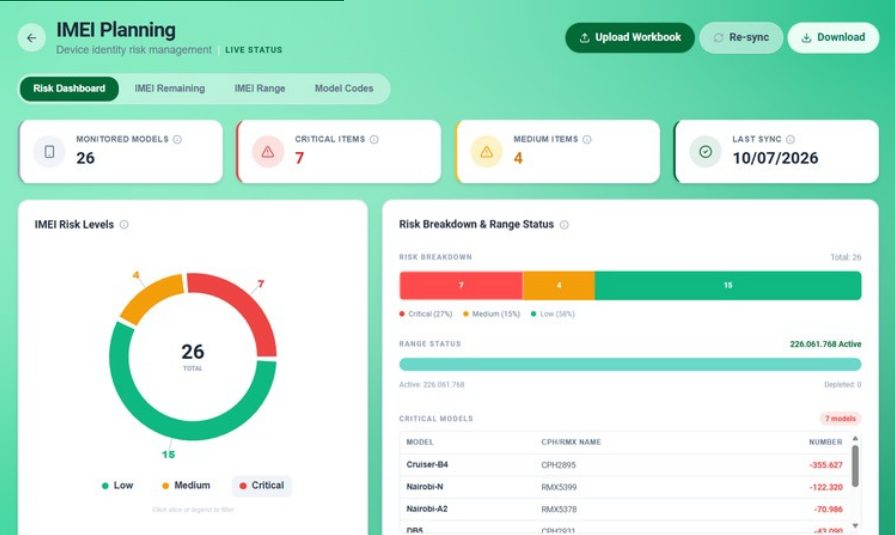</button></figure>
        </div>
      </div>
      <div class="mosaic">
        <figure class="fig w2"><button data-cap="Upload the weekly MPS">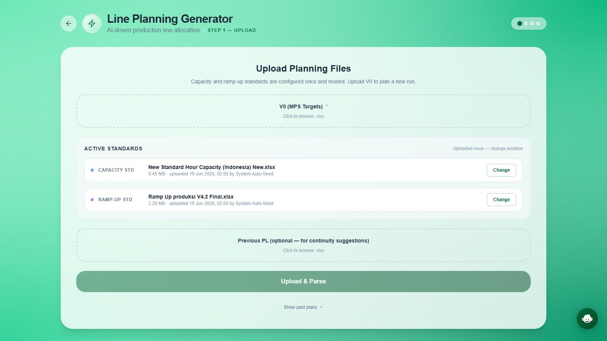<span class="lbl">1 · Upload</span></button></figure>
        <figure class="fig w2"><button data-cap="Configure hours, shifts and efficiency">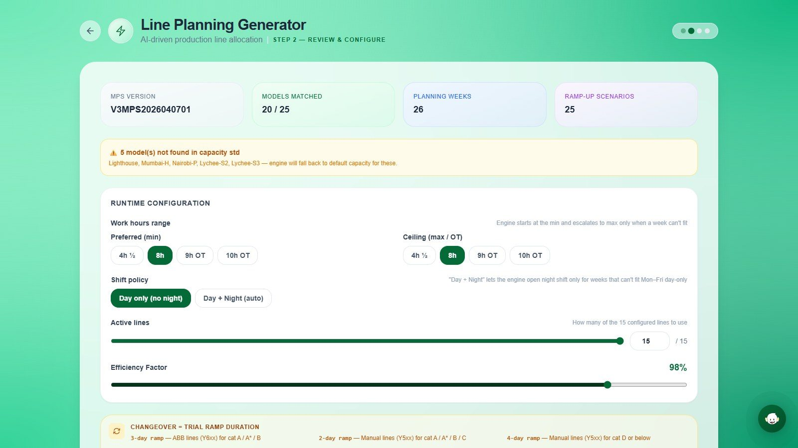<span class="lbl">2 · Configure</span></button></figure>
        <figure class="fig w2"><button data-cap="Generated plan in the factory's Excel format">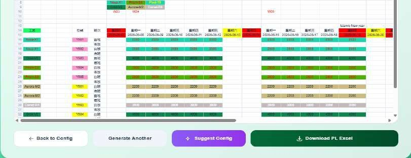<span class="lbl">3 · Plan</span></button></figure>
      </div>
    </div>
  </article>

  <article class="case" id="c-vision">
    <div class="chead"><span class="no">06</span><div><h3>AI Vision for Quality</h3><p class="sub">A camera as a second OK signal on packaging, and SOP compliance from CCTV</p></div><span class="when">Apr–Oct 2026</span></div>
    <div class="cin">
      <div class="story">
        <div><h4>Problem</h4><p>On one packaging line a box only had to weigh right to pass, so an unsealed box could ship, and rejects left no evidence for QC. On assembly, supervisors could not watch every station for SOP compliance.</p></div>
        <div><h4>What was built</h4><p>A seal-detection model running on an ordinary CPU; the PLC passes a box only when weigher and camera both say OK, and every NG is saved with a photo. VisionSOP brings several CCTV feeds into one dashboard that flags SOP violations.</p></div>
        <div class="part"><h4>My part</h4><p>Defined the requirement with QC as a second signal rather than a replacement, split the hardware and software work, coordinated installation with ME, and reviewed model accuracy on real line data before release.</p></div>
      </div>
      <div class="cols">
        <div class="box">
          <div class="swaphead"><b>Operator screen</b><div class="seg" role="group" aria-label="Camera result"><button type="button" aria-pressed="true" data-swap="s3" data-to="a">OK</button><button type="button" aria-pressed="false" data-swap="s3" data-to="b">NG</button></div></div>
          <div class="swap" id="s3" data-state="a" style="--ar:16/9">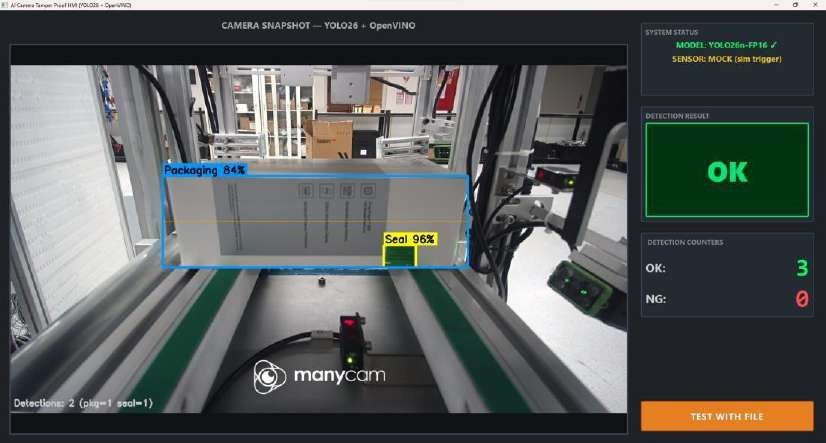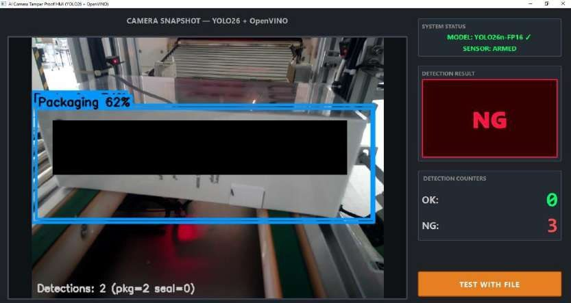</div>
          <div class="spec tnum" style="margin-top:12px">
            <div><div class="v">99.3%</div><div class="l">mAP50</div></div>
            <div><div class="v">88.6%</div><div class="l">mAP50-95</div></div>
            <div><div class="v">8 ms</div><div class="l">per frame, CPU</div></div>
            <div><div class="v">5.4×</div><div class="l">faster after optimization</div></div>
          </div>
        </div>
        <div class="box">
          <p class="ph4"><span>VisionSOP · accuracy per camera</span><span>mAP50</span></p>
          <figure class="fig"><button data-cap="VisionSOP dashboard with live compliance events">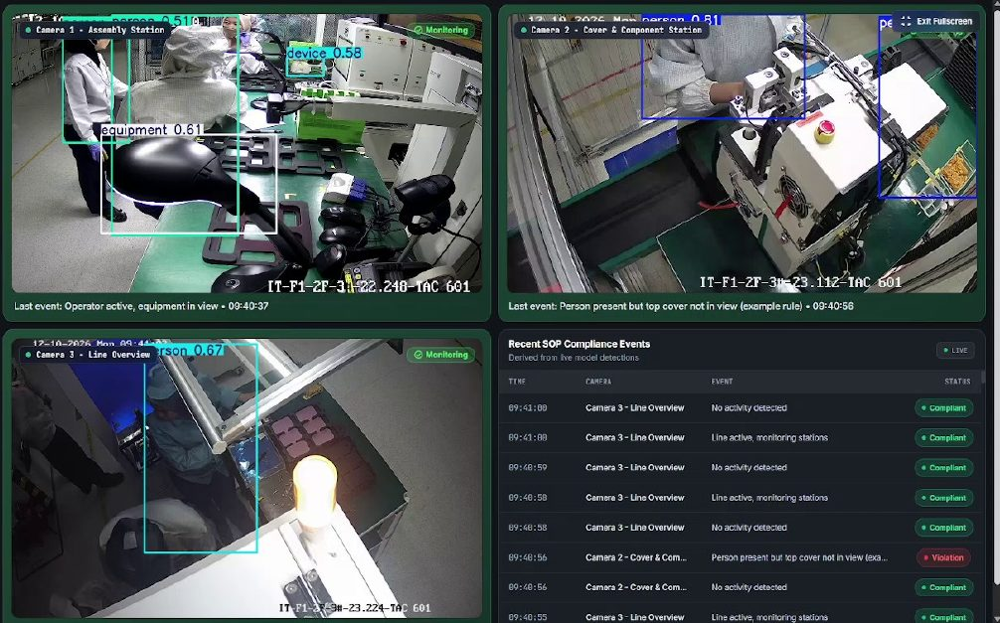</button></figure>
          <div class="bars anim" style="margin-top:14px">
            <div class="bar"><span>Assembly</span><div class="tr"><div class="fl g" style="width:92.5%"></div></div><span class="vv">0.93</span></div>
            <div class="bar"><span>Cover</span><div class="tr"><div class="fl g" style="width:74.8%"></div></div><span class="vv">0.75</span></div>
            <div class="bar"><span>Line view</span><div class="tr"><div class="fl g" style="width:89.4%"></div></div><span class="vv">0.89</span></div>
          </div>
        </div>
      </div>
    </div>
  </article>
</section>

<section class="s" id="projects">
  <div class="head"><div class="idx">All projects</div><div><h2>22 projects</h2><p>Every project from 2025–2026. Filter by discipline and open a card for details, images and numbers.</p></div></div>
  <div class="filters" role="group" aria-label="Filter projects" id="filters"></div>
  <div class="pgrid" id="pgrid"></div>
</section>

<section class="s" id="design">
  <div class="head"><div class="idx">Design work</div><div><h2>Workbench, tools and printed parts</h2><p>Small fixes from watching the line, and models for larger equipment.</p></div></div>
  <div class="cols" style="margin-top:0">
    <div class="box">
      <div class="swaphead"><b>Tool connector: two tools in one</b><div class="seg" role="group" aria-label="Tool connector"><button type="button" aria-pressed="true" data-swap="s4" data-to="a">Before</button><button type="button" aria-pressed="false" data-swap="s4" data-to="b">After</button></div></div>
      <div class="swap" id="s4" data-state="a" style="--ar:4/3"></div>
      <p style="font-size:14px;color:var(--ink-2);margin-top:10px">The SOP needed two tools, about 2 seconds of motion per unit. A printed connector removed it.</p>
    </div>
    <div class="box">
      <div class="swaphead"><b>Drill guard: no contact with the phone</b><div class="seg" role="group" aria-label="Drill guard"><button type="button" aria-pressed="true" data-swap="s5" data-to="a">Before</button><button type="button" aria-pressed="false" data-swap="s5" data-to="b">After</button></div></div>
      <div class="swap" id="s5" data-state="a" style="--ar:4/3"></div>
      <p style="font-size:14px;color:var(--ink-2);margin-top:10px">The spinning mini drill could touch the unit. A printed guard prevents it.</p>
    </div>
  </div>
  <div class="dgrid">
    <figure class="fig w2"><button data-cap="New workbench with QA Pass, e-SOP screens and conveyor"></button><figcaption>Workbench for the new line</figcaption></figure>
    <figure class="fig"><button data-cap="ILTC room design"></button><figcaption>ILTC room</figcaption></figure>
    <figure class="fig"><button data-cap="Assembly line in 3D"></button><figcaption>Assembly line</figcaption></figure>
    <figure class="fig"><button data-cap="Needle card detector"></button><figcaption>Needle card detector</figcaption></figure>
    <figure class="fig"><button data-cap="Blower cover"></button><figcaption>Blower cover</figcaption></figure>
    <figure class="fig"><button data-cap="Camera cover"></button><figcaption>Camera cover</figcaption></figure>
    <figure class="fig"><button data-cap="Karakuri rack concept"></button><figcaption>Karakuri rack concept</figcaption></figure>
  </div>
</section>

<section class="s" id="before">
  <div class="head"><div class="idx">Before OPPO</div><div><h2>Projects, organizations and certificates</h2><p>Robotics, drones and agricultural engineering at IPB University, 2021–2025.</p></div></div>
  <div class="pre">
    <article class="pc"><div class="pcim"><figure class="fig "><button data-cap="SAFMC 2025 drone field test"></button></figure><figure class="fig "><button data-cap="SAFMC 2025, Singapore"></button></figure></div>
      <div class="pcb"><span class="mono">Oct 2024 – Apr 2025 · Mechanical team leader</span><h3>Competition drones: SAFMC 2025 and autonomous VTOL</h3>
      <p>Led the mechanical design of a quadcopter for the Singapore Amazing Flying Machine Competition: frame, propulsion mounts, landing gear and a payload drop and retrieval mechanism, through to flight testing. Before that, the airframe, mass balance and vibration control of a fully autonomous VTOL quadcopter.</p>
      <div class="pcm"><span><b>Finalist</b>SAFMC 2025, Singapore</span><span><b>Top 7</b>Indonesian Flying Robot Contest 2024</span></div></div></article>
    <article class="pc"><div class="pcim"><figure class="fig contain"><button data-cap="Humanoid robot, SolidWorks model"></button></figure><figure class="fig "><button data-cap="Humanoid robots built by the team"></button></figure></div>
      <div class="pcb"><span class="mono">2022 – 2024 · IPB Robotic Club</span><h3>Humanoid robot</h3>
      <p>Mechanical design of a competition humanoid robot, from SolidWorks model to the built robots.</p>
      <div class="pcm"><span><b>Finalist</b>Indonesian Humanoid Robot Contest 2024</span></div></div></article>
    <article class="pc"><div class="pcim"><figure class="fig "><button data-cap="Rice nitrogen analyzer in the field"></button></figure><figure class="fig contain"><button data-cap="Rice nitrogen analyzer design"></button></figure></div>
      <div class="pcb"><span class="mono">2023 · PKM-KI team</span><h3>Rapid rice nitrogen analyzer</h3>
      <p>A handheld tool that reads a rice leaf with a smartphone to estimate nitrogen need, so farmers can dose fertilizer accurately. Registered as a copyrighted work.</p>
      <div class="pcm"><span><b>Finalist</b>PIMNAS 36</span><span><b>2nd best</b>PKM-KI, PKP2 2023</span></div></div></article>
    <article class="pc wide"><div class="pcim one"><figure class="fig "><button data-cap="IoT Challenge BRIwork award"></button></figure></div>
      <div class="pcb"><span class="mono">2023 · BRIwork Agro-Hub</span><h3>IoT Challenge: farm tools &amp; machinery</h3>
      <p>IoT start-up challenge on connecting farm tools and machinery.</p>
      <div class="pcm"><span><b>2nd Winner</b>IoT Challenge BRIwork 2023</span></div></div></article>
    <article class="pc txt">
      <div class="pcb"><span class="mono">Jan – May 2025 · Mechatronics lead</span><h3>Oil-palm pesticide applicator</h3>
      <p>Auger-fed applicator for targeted pesticide dosing on oil palm trees against rhinoceros beetles. Arduino-controlled DC gear motor on a 12 V battery.</p>
      <div class="pcm"><span><b>3 m</b>telescopic aluminium frame</span><span><b>30 cm</b>stainless auger</span><span><b>300 g</b>corrosion-resistant hopper</span></div></div></article>
    <article class="pc txt">
      <div class="pcb"><span class="mono">Jun – Dec 2024 · Bangkit Academy</span><h3>Android app for corn nitrogen</h3>
      <p>Intensive mobile development program led by Google, Tokopedia, Gojek and Traveloka. Final project: a Kotlin app that detects nitrogen needs in corn plants, with Firebase and REST APIs.</p>
      <div class="pcm"><span><b>Kotlin</b>Android</span><span><b>Firebase</b>data</span></div></div></article>
  </div>
  <p class="ph4" style="margin-top:28px"><span>Student CAD work</span></p>
  <div class="cadrow"><figure class="fig contain"><button data-cap="Tracked robot"></button></figure><figure class="fig contain"><button data-cap="Vehicle chassis"></button></figure><figure class="fig contain"><button data-cap="Conveyor machine"></button></figure><figure class="fig contain"><button data-cap="Container layout"></button></figure><figure class="fig contain"><button data-cap="Mixing tank"></button></figure><figure class="fig contain"><button data-cap="Cabinet design"></button></figure></div>

  <div class="orgs">
    <div class="org"><div class="orgimg"><figure class="fig "><button data-cap="IPB Robotic Club workshop"></button></figure></div><div>
      <span class="mono">2022 – 2024</span><h3>IPB Robotic Club</h3><p class="orole">Head of Mechanical Team</p>
      <ul><li>Led the mechanical team designing, building and testing competition robots and drones</li><li>Coordinated with electrical and programming leads to integrate each system</li><li>Managed tools, materials and team schedules to meet competition deadlines</li></ul></div></div>
    <div class="org"><div class="orgimg logo"></div><div>
      <span class="mono">2022 – 2023</span><h3>BEM FATETA IPB</h3><p class="orole">Head of Event Creative · Head of Educational Development</p>
      <ul><li>Led creative concept and execution of faculty and national events, including the Mechanical &amp; Biosystem Fair and Gebyar PKM FATETA</li><li>Ran education programs such as Alumni Goes To School</li><li>Named Best Staff, BEM FATETA IPB 2023</li></ul></div></div>
  </div>

  <p class="ph4" style="margin-top:28px"><span>Certificates</span><span>Click to enlarge</span></p>
  <div class="certs"><figure class="fig contain"><button data-cap="PIMNAS 36 certificate"></button></figure><figure class="fig contain"><button data-cap="PKM 2023 funding certificate"></button></figure><figure class="fig contain"><button data-cap="Copyright registration, rice nitrogen analyzer"></button></figure><figure class="fig contain"><button data-cap="IoT Challenge BRIwork, 2nd winner"></button></figure></div>
</section>

<section class="s" id="skills">
  <div class="head"><div class="idx">Skills</div><div><h2>Engineering skills and tools</h2><p>Mechanical, electronic and embedded work behind the projects above, plus the software I use.</p></div></div>
  <div class="eng"><div class="ecard"><h3>Mechanical design</h3><p>Machines, fixtures and mechanisms</p><div class="tags"><span>3D CAD modeling</span><span>Reverse engineering</span><span>Mechanism design: linear axes, belt drives, gantries, grippers</span><span>Machine &amp; workstation design</span><span>Jig &amp; fixture design</span><span>Karakuri mechanisms</span><span>Aluminium-profile frames</span><span>Pneumatics &amp; vacuum systems</span><span>GD&amp;T</span><span>DFM / DFA</span></div></div><div class="ecard"><h3>Electronics &amp; control</h3><p>From schematic to wired panel</p><div class="tags"><span>Circuit design</span><span>PCB design &amp; soldering</span><span>Motor control: stepper, servo, DC</span><span>Closed-loop motor drives</span><span>Power supply &amp; panel wiring (24 V, relays, connectors)</span><span>Andon &amp; alarm systems</span><span>PLC &amp; HMI (basic)</span></div></div><div class="ecard"><h3>Embedded &amp; IoT</h3><p>Firmware, sensors and data</p><div class="tags"><span>Embedded C/C++ (Arduino IDE, PlatformIO)</span><span>ESP32 &amp; Arduino</span><span>Protocols: I2C, SPI, UART, Wi-Fi, BLE, MQTT</span><span>Sensor integration: IR, color, UWB, dust, temperature, humidity</span><span>UWB indoor positioning</span><span>Machine vision setup: industrial cameras, code reading</span><span>Data logging &amp; dashboards (Grafana)</span></div></div><div class="ecard"><h3>Analysis &amp; documentation</h3><p>Proving a design works</p><div class="tags"><span>Structural analysis: stiffness, deflection, stress</span><span>FEA (SolidWorks Simulation, ANSYS)</span><span>Assembly &amp; part drawings</span><span>Bill of materials</span><span>User &amp; maintenance manuals</span></div></div><div class="ecard"><h3>Manufacturing &amp; maintenance</h3><p>Getting it running on the line</p><div class="tags"><span>Fabrication &amp; assembly</span><span>3D printing (FDM)</span><span>Installation &amp; commissioning</span><span>Testing &amp; troubleshooting</span><span>Preventive maintenance</span><span>Root-cause analysis</span><span>Factory layout &amp; line planning</span><span>Material flow</span></div></div><div class="ecard"><h3>Operations &amp; visualization</h3><p>Lean practice and 3D</p><div class="tags"><span>Lean manufacturing</span><span>Kaizen</span><span>5S</span><span>SMED</span><span>TPM</span><span>Value stream mapping</span><span>Industry 4.0</span><span>Digital twin</span><span>Photoreal rendering</span><span>3D animation</span><span>VR/AR assets</span></div></div></div>
  <p class="ph4" style="margin-top:32px"><span>Software</span></p>
  <div class="tools"><div class="tg"><h4>Mechanical CAD</h4><div class="tl2"><div class="tool"><span>SolidWorks</span></div><div class="tool"><span>AutoCAD</span></div><div class="tool"><span>SketchUp</span></div><div class="tool"><span>Tinkercad</span></div></div></div><div class="tg"><h4>Electronics &amp; embedded</h4><div class="tl2"><div class="tool"><span>Arduino IDE</span></div><div class="tool"><span>ESP32</span></div><div class="tool"><span>EasyEDA</span></div><div class="tool"><span>Proteus</span></div><div class="tool"><span>VS Code</span></div></div></div><div class="tg"><h4>Programming</h4><div class="tl2"><div class="tool"><span>Python</span></div><div class="tool"><span>Android Studio</span></div></div></div><div class="tg"><h4>Rendering</h4><div class="tl2"><div class="tool"><span>Blender</span></div><div class="tool"><span>KeyShot</span></div><div class="tool"><span class="tx" aria-hidden="true">E</span><span>Enscape</span></div></div></div><div class="tg"><h4>Office &amp; media</h4><div class="tl2"><div class="tool"><span>Microsoft Office</span></div><div class="tool"><span class="tx" aria-hidden="true">G</span><span>Google Workspace</span></div><div class="tool"><span>Photoshop</span></div><div class="tool"><span>Premiere Pro</span></div><div class="tool"><span>CapCut</span></div><div class="tool"><span>KineMaster</span></div></div></div><div class="tg"><h4>Languages</h4><div class="tags"><span>Indonesian, native</span><span>English, working proficiency</span></div></div>
  </div>
</section>

<section class="s" id="awards">
  <div class="head"><div class="idx">Awards</div><div><h2>Awards &amp; recognition</h2><p>Most recent first.</p></div></div>
  <div class="aw">
    <figure class="fig awf"><button data-cap="Best Innovation Team, Q2 2026, OPPO Indonesia Manufacturing"></button>
      <figcaption><span class="mono">Q2 2026 · OPPO Indonesia Manufacturing</span><b>Best Innovation Team</b><span>Awarded to the Digital Innovation team for the quarter's projects.</span></figcaption></figure>
    <ul class="awl">
      <li><span class="y">2025</span><div><b>SAFMC, Singapore</b><span>International</span></div><em class="intl">Finalist</em></li>
      <li><span class="y">2024</span><div><b>Indonesian Flying Robot Contest</b><span>National</span></div><em>Top 7</em></li>
      <li><span class="y">2024</span><div><b>Indonesian Humanoid Robot Contest</b><span>National</span></div><em>Finalist</em></li>
      <li><span class="y">2023</span><div><b>PIMNAS 36</b><span>National</span></div><em>Finalist</em></li>
      <li><span class="y">2023</span><div><b>PKM-KI, PKP2</b><span>National</span></div><em>2nd best</em></li>
      <li><span class="y">2023</span><div><b>IoT Challenge BRIwork</b><span>National</span></div><em>2nd Winner</em></li>
      <li><span class="y">2023</span><div><b>Best Staff, BEM FATETA IPB</b><span>University</span></div><em>Award</em></li>
    </ul>
  </div>
</section>

<div class="contact" id="contact">
  <div><h2>Contact</h2><p>Happy to walk through any project in more detail.</p></div>
  <div>
    <div class="cline"><a class="val" href="https://www.linkedin.com/in/bambang-ferdiansyah-813414185/" target="_blank" rel="noopener">linkedin.com/in/bambang-ferdiansyah-813414185</a></div>
    <div class="cline"><a class="val" id="em" href="mailto:Bambangfs23@gmail.com">Bambangfs23@gmail.com</a><button class="copy" data-copy="em" type="button">Copy</button></div>
    <div class="cline"><a class="val" id="ph" href="https://wa.me/6281285888125" target="_blank" rel="noopener">+62 812-8588-8125</a><button class="copy" data-copy="ph" type="button">Copy</button></div>
    <div class="cline"><span class="val">Tangerang, Indonesia</span></div>
  </div>
</div>
</main>
<footer class="wrap">Projects at OPPO Indonesia Manufacturing, 2025–2026, delivered with the BPM team. Images from the team's project reports.</footer>

<dialog class="pm" id="pm" aria-labelledby="pmt">
  <div class="ptop"><h3 id="pmt"></h3><button class="xbtn" type="button" id="pmx">Close ✕</button></div>
  <div class="pbody"><div><div class="thumbs" id="pmth"></div></div><div class="info" id="pminfo"></div></div>
</dialog>
<dialog class="lb" id="lb" aria-label="Image viewer"><button class="xbtn" type="button" id="lbx">Close ✕</button><p id="lbc"></p></dialog>

<script>
(function(){
var MECH="Mechanical design, build and installation, programming and testing, together with the team.";
var P=[
{t:"Reliable Workshop",team:"Visual Design",img:["rw-showcase","rw-601","rw-esop","rw-iltc","rw-wall","rw-tpmdojo"],sum:"Workshop 6 rebuilt as a digital line and training center.",hl:"15",hll:"work items delivered",
 prob:"Paper SOPs and check sheets; no live KPI view; no space to train.",built:["Line 601: live dashboard, leader station, digital e-SOP, ESD blowers","TV walls for KPI, AOI and AI-CCTV","Engineering Training Center with four dojos","Wall of Fame, Product Showcase, Hall of Stars"],
 m:[["15","work items"],["½","local material price"],["4","dojos"]],role:"3D design; led and coordinated the project.",cs:"#c-reliable"},
{t:"Factory Digital Twin",team:"Visual Design",img:["dt-factory","dt-ws6","m3","dt-measure","dt-ws5","dt-changeover"],sum:"3D replica of machines, workshops and the factory.",hl:"30+",hll:"machines modeled",
 prob:"2D-only layouts caused up to 15% delay in maintenance and machine moves.",built:["On-site measurement and SolidWorks models","Workshop 5, 6 and full-factory layouts","Enscape renders","3D base for the changeover dashboard"],
 m:[["30+","machines"],["15","lines planned"],["28","weeks"]],role:"All measurement, modeling and layout work.",cs:"#c-twin"},
{t:"TrainVerse VR/AR",team:"Visual Design",img:["tv-sim","tv-hands","tv-ar","tv-tour","tv-labels","tv-handmodel"],sum:"VR assembly training with an AI voice coach and AR.",hl:"21 joints",hll:"hand tracking, <20 ms",
 prob:"Training on real lines damages parts and ties up machines and engineers.",built:["VR assembly with hand tracking and scoring","AI coach in spoken Indonesian","AR via QR code","1:1 factory tour"],
 m:[["21","hand joints"],["94.2%","speech accuracy"],["2 mo","build time"]],role:"3D models, hand animation and asset optimization (team of four).",cs:"#c-tv"},
{t:"Workbench & Tool Designs",team:"Visual Design",img:["rw-bench-render","rw-desk-render","rw-desk-real","tool-connector","tool-case-after"],sum:"Workbench, leader's desk, display case and line tools.",hl:"2 s → 0",hll:"tool-change motion per unit",
 prob:"New line stations and small tool problems on the line.",built:["Workbench with e-SOP screens and conveyor","Leader's desk and display case","Tool connector","Drill guard"],
 m:[["5","designs built"],["2 s→0","per unit"]],role:"My own design work.",cs:"#design"},
{t:"QA Pass Automation",team:"Mechatronics",img:["qa-scan","qa-line","qa-handover","qa-pcb","qa-real","qa-pcbreal"],sum:"Sensor-triggered IMEI scanning at final packaging.",hl:"15–20s → <3s",hll:"per color box",
 prob:"Manual sticker check and 10 IMEI scans per box took 15–20 s and was error-prone.",built:["IR and color sensor trigger","Camera reads 10 codes at once","Custom PCB and printed enclosure","Andon lamp"],
 m:[["<3 s","per box"],["7","lines"],["100%","sticker errors removed"]],role:MECH+" Coordinated the rollout and ME handover.",cs:"#c-qa"},
{t:"AutoClamping Rack Gen 3",team:"Mechatronics",img:["rack-load","rack","rack-panel","rack-hmi"],sum:"PLC and HMI rack that takes heavy box handling off operators.",hl:"0%",hll:"error rate in probation",
 prob:"Earlier racks were unreliable, sensors gave false faults, and operators moved heavy boxes by hand.",built:["Karakuri mechanism and control panel","PLC program and HMI","Installed in line production"],
 m:[["0%","error rate"],["100%","HMI functional"],["19","weeks to line"]],role:MECH,cs:null},
{t:"COBOT Pick-and-Place",team:"Mechatronics",img:["cobot-real","cobot","cobot-belt","cobot-wire"],sum:"3-axis gantry robot for a repetitive pick-and-place task.",hl:"8.57 s",hll:"per unit vs ±10 s manual",
 prob:"A repetitive task limited by operator hours and consistency.",built:["Reinforced frame and ribbed brackets (deflection −40–70%)","Square-tube Z gantry (deflection −60–90%)","Closed-loop motors","Adjustable belt clamps (slip risk −80%)"],
 m:[["8.57 s","per unit"],["IDR 3M","vs 5M/month"],["24/5","run time"]],role:MECH,cs:null},
{t:"UWB Indoor Tracking",team:"Mechatronics",img:["uwb-map","tagger","dock","uwb-tag","heatmap","uwb-ai"],sum:"Wearable tags and a 3D map to locate warehouse staff.",hl:"<1 s",hll:"to locate staff (was 5–10 min)",
 prob:"Staff were hard to find across a large warehouse at peak hours.",built:["ESP32 UWB tags, 8–10 h battery, charging dock","3D warehouse map with zones","Heatmap, movement paths, playback","AI chatbot on movement data"],
 m:[["8–10 h","tag battery"],["4","dashboard versions"]],role:MECH,cs:null},
{t:"Screen-Guard Preventive Maintenance",team:"Mechatronics",img:["pm-install","pm-device","grafana","pareto"],sum:"Dust, temperature and humidity monitoring inside the machine.",hl:"−70%",hll:"NG rate on the screen-guard machine",
 prob:"The screen-guard machine was the top loss, mostly from trapped dust.",built:["Sensor box reporting every 5 s","Grafana dashboard","Early-warning alerts","Air purifier triggered by the sensors"],
 m:[["−70%","NG rate"],["5 s","update rate"]],role:MECH,cs:null},
{t:"Vacuum Bin",team:"Mechatronics",img:["vacuum-real"],sum:"Central vacuum waste bin replacing open acrylic bins.",hl:"10–15%",hll:"downtime reduction target",
 prob:"Open bins risked contamination and paused the line to empty.",built:["Vacuum-fed bin at the station","Centralized waste collection"],
 m:[["Low","contamination risk"],["~3 wk","build time"]],role:MECH,cs:null},
{t:"Sign Holder & Printed Parts",team:"Mechatronics",img:["sp-camcover","sign","sp-needle","sp-blower","sp-uwbcase","sp-karakuri"],sum:"Redesigned sign holder and 3D-printed parts for the line.",hl:"7+",hll:"parts designed and printed",
 prob:"Small daily needs on the line that no standard part covers.",built:["Sign holder redesign","Needle card detector","Blower and camera covers","UWB enclosure","Karakuri rack concept"],
 m:[["7+","parts"]],role:MECH,cs:"#design"},
{t:"MPS v2.0 Line Planning",team:"Software & AI",img:["mps-result","mps-upload","imei-hd","mps-acc"],sum:"Weekly MPS to daily line plan, automatically.",hl:"98.8%",hll:"plan accuracy",
 prob:"Daily line plans built by hand in Excel.",built:["Planning engine in the factory Excel format","On-premise AI assistant","Accuracy check per model"],
 m:[["98.8%","accuracy"],["5m→3s","generation"],["−85%","shortfall"]],role:"Set goals with planners, divided the work, reviewed results.",cs:"#c-mps"},
{t:"IMEI Planning",team:"Software & AI",img:["imei"],sum:"IMEI shortage risk for every model on one screen.",hl:"26",hll:"models tracked",
 prob:"IMEI status in a 12-sheet Excel workbook.",built:["Risk dashboard","Remaining stock and range pages","One weekly upload"],
 m:[["26","models"],["7","critical flagged"]],role:"Part of MPS v2.0; set goals and reviewed.",cs:"#c-mps"},
{t:"AI Tamper-Proof Camera",team:"Software & AI",img:["cam-ok","cam-ng","cam-anno"],sum:"Camera as a second OK signal on packaging.",hl:"99.3%",hll:"detection mAP50",
 prob:"Weigher-only check let unsealed boxes pass.",built:["Seal detection on CPU","PLC: weigher and camera","Photo log of every NG"],
 m:[["99.3%","mAP50"],["8 ms","per frame"]],role:"Defined requirements with QC, coordinated hardware and software.",cs:"#c-vision"},
{t:"VisionSOP",team:"Software & AI",img:["visionsop","visionsop-train"],sum:"SOP compliance across stations from CCTV.",hl:"0.93",hll:"best camera mAP50",
 prob:"Supervisors cannot watch every station.",built:["Multi-camera dashboard","Rule-based compliance labels"],
 m:[["3","cameras"],["0.75–0.93","mAP50"]],role:"Defined requirements and reviewed results.",cs:"#c-vision"},
{t:"Digital Checklist",team:"Software & AI",img:["dc-tpm","dc-login"],sum:"Tablet 5S, TPM and QC checklists replace paper.",hl:"28",hll:"machine TPM forms",
 prob:"Paper checklists were slow, got lost, and missed checks went unseen.",built:["Tablet forms with reference photos","Missed slots flagged after 2 h","Leader and IPQC confirmation","Heatmap and Excel recap"],
 m:[["28","TPM forms"],["6","user roles"]],role:"Built parts of it with the software team.",cs:null},
{t:"AI Monitoring Dashboard",team:"Software & AI",img:["mon-grid"],sum:"Every machine screen on one view-only wall.",hl:"1 wall",hll:"all machine screens, view-only",
 prob:"Machines had no API, and remote desktop logged operators out.",built:["Screen mirror per machine","Self-healing web proxies","Grid, slideshow and kiosk modes","EN/ID guidebooks"],
 m:[["<1 mo","to deliver"]],role:"Built parts of it with the software team.",cs:null},
{t:"SMED Changeover",team:"Software & AI",img:["dt-changeover","smed-admin","smed-plan"],sum:"ME and BPM changeovers in one 3D system.",hl:"93",hll:"standard tasks",
 prob:"Two separate dashboards; no shared view for five teams.",built:["Shared task library","Planned vs actual timing","3D monitor per changeover"],
 m:[["30","ME machines mapped"],["93","tasks"],["5","teams"]],role:"Built the 3D line models and parts of the integration.",cs:"#c-twin"},
{t:"PRO-GATE",team:"Software & AI",img:["progate"],sum:"Digital gate for visitors, VIPs and assets.",hl:"Live",hll:"on-site list",
 prob:"Paper visitor logs; tools and chemicals untracked.",built:["Visitor, VIP and employee entry","Two-step asset form","Analytics and Excel export"],
 m:[["2 mo","built"]],role:"Supported the software team.",cs:null},
{t:"CI Digital Platform",team:"Software & AI",img:["ci","ci-form"],sum:"AI-assisted kaizen idea submission.",hl:"AI",hll:"structures and pre-grades ideas",
 prob:"Paper forms; ideas hard to write and slow to review.",built:["AI turns casual input into a kaizen form","Duplicate check","Rule-based pre-grading"],
 m:[["1","digital workflow"]],role:"Supported the software team.",cs:null},
{t:"5M Manpower Tracking",team:"Software & AI",img:["manpower"],sum:"Live manpower, hours and overtime per area.",hl:"2 min",hll:"attendance refresh",
 prob:"Deviations seen late; overtime reported the next day.",built:["Attendance data polling","Standard manpower per area","Overtime and deviation alerts"],
 m:[["2 min","refresh"],["Same day","overtime view"]],role:"Supported the software team.",cs:null},
{t:"Ollie HR Agent",team:"Software & AI",img:["ollie"],sum:"Face-login kiosk for HR questions and standards.",hl:"Self-service",hll:"HR data and rules",
 prob:"Employees contacted HR for routine data and rules.",built:["Face recognition","AI chat on rules and records","Uniform standard guide"],
 m:[["1","kiosk"]],role:"Supported the software team.",cs:null}
];
var grid=document.getElementById('pgrid'),fl=document.getElementById('filters'),cur="All";
function esc(s){return String(s).replace(/&/g,'&amp;').replace(/</g,'&lt;')}
function render(){grid.innerHTML='';P.filter(function(p){return cur==="All"||p.team===cur}).forEach(function(p){
 var b=document.createElement('button');b.type='button';b.className='pcard';
 b.innerHTML='<div class="pb"><span class="mono" style="font-size:10.5px">'+esc(p.team)+'</span><h4>'+esc(p.t)+'</h4><p>'+esc(p.sum)+'</p><div class="hl">'+esc(p.hl)+'<small>'+esc(p.hll)+'</small></div></div>';
 b.addEventListener('click',function(){openP(p)});grid.appendChild(b)});
 fl.querySelectorAll('button').forEach(function(x){x.setAttribute('aria-pressed',x.dataset.t===cur)})}
["All","Visual Design","Mechatronics","Software & AI"].forEach(function(t){var n=t==="All"?P.length:P.filter(function(p){return p.team===t}).length;
 var b=document.createElement('button');b.type='button';b.dataset.t=t;b.innerHTML=esc(t)+'<span>'+n+'</span>';b.addEventListener('click',function(){cur=t;render()});fl.appendChild(b)});
render();
var pm=document.getElementById('pm'),pmi=document.getElementById('pmi'),pmth=document.getElementById('pmth'),pminfo=document.getElementById('pminfo');
function openP(p){document.getElementById('pmt').textContent=p.t;pmi.src='img/'+p.img[0]+'.jpg';pmi.alt=p.t;pmth.innerHTML='';
 p.img.forEach(function(im,i){var b=document.createElement('button');b.type='button';b.setAttribute('aria-label','Image '+(i+1));b.setAttribute('aria-pressed',i===0);b.innerHTML='';
  b.addEventListener('click',function(){pmi.src='img/'+im+'.jpg';pmth.querySelectorAll('button').forEach(function(x){x.setAttribute('aria-pressed',x===b)})});pmth.appendChild(b)});
 var h='<span class="mono">'+esc(p.team)+'</span><div><h5>Problem</h5><p>'+esc(p.prob)+'</p></div><div><h5>What was built</h5><ul>'+p.built.map(function(x){return '<li>'+esc(x)+'</li>'}).join('')+'</ul></div>';
 h+='<div><h5>Numbers</h5><div class="mk">'+p.m.map(function(x){return '<div><b>'+esc(x[0])+'</b><span>'+esc(x[1])+'</span></div>'}).join('')+'</div></div>';
 h+='<div class="part"><h5>My part</h5><p>'+esc(p.role)+'</p></div>';
 if(p.cs)h+='<a href="'+p.cs+'" class="mono" data-close style="color:var(--green)">Read more →</a>';
 pminfo.innerHTML=h;var a=pminfo.querySelector('[data-close]');if(a)a.addEventListener('click',function(){pm.close()});
 if(pm.showModal)pm.showModal();else pm.setAttribute('open','')}
document.getElementById('pmx').addEventListener('click',function(){pm.close()});
document.querySelectorAll('.gopen').forEach(function(b){b.addEventListener('click',function(){var p=P.filter(function(x){return x.t===b.dataset.p})[0];if(p)openP(p)})});
pm.addEventListener('click',function(e){if(e.target===pm)pm.close()});
document.querySelectorAll('[data-swap]').forEach(function(b){b.addEventListener('click',function(){document.getElementById(b.dataset.swap).dataset.state=b.dataset.to;
 b.parentNode.querySelectorAll('button').forEach(function(x){x.setAttribute('aria-pressed',x===b)})})});
var lb=document.getElementById('lb'),li=document.getElementById('lbi'),lc=document.getElementById('lbc');
document.querySelectorAll('.fig button').forEach(function(b){b.addEventListener('click',function(){var i=b.querySelector('img');li.src=i.src;li.alt=i.alt;lc.textContent=b.dataset.cap||i.alt;if(lb.showModal)lb.showModal();else lb.setAttribute('open','')})});
document.getElementById('lbx').addEventListener('click',function(){lb.close()});
lb.addEventListener('click',function(e){if(e.target===lb)lb.close()});
if('IntersectionObserver' in window&&!matchMedia('(prefers-reduced-motion: reduce)').matches){
 var io=new IntersectionObserver(function(es){es.forEach(function(e){if(e.isIntersecting){requestAnimationFrame(function(){e.target.classList.remove('pre')});io.unobserve(e.target)}})},{threshold:.4});
 document.querySelectorAll('.bars.anim').forEach(function(el){if(el.getBoundingClientRect().top>innerHeight){el.classList.add('pre');io.observe(el)}})}
document.querySelectorAll('[data-copy]').forEach(function(b){b.addEventListener('click',function(){var el=document.getElementById(b.dataset.copy);
 function sel(){var r=document.createRange();r.selectNodeContents(el);var s=getSelection();s.removeAllRanges();s.addRange(r);b.textContent='Selected'}
 try{navigator.clipboard.writeText(el.textContent).then(function(){b.textContent='Copied'},sel)}catch(e){sel()}
 setTimeout(function(){b.textContent='Copy'},1800)})});
})();
</script>
